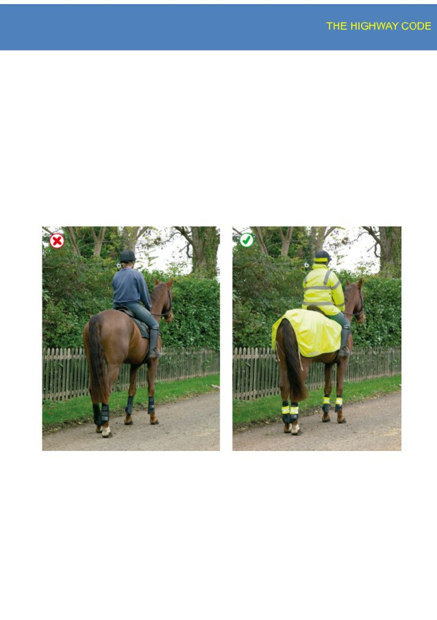

A
Contents
Introduction
3
Rules for pedestrians (1 to 35)
5
Rules for users of powered wheelchairs and mobility scooters (36 to 46)
19
Rules about animals (47 to 58)
23
Rules for cyclists (59 to 82)
28
Rules for motorcyclists (83 to 88)
38
Rules for drivers and motorcyclists (89 to 102)
44
General rules, techniques and advice for all drivers and riders (103 to 158)
59
Using the road (159 to 203)
84
Road users requiring extra care (204 to 225)
110
Driving in adverse weather conditions (226 to 237)
119
Waiting and parking (238 to 252)
125
Motorways (253 to 273)
132
Breakdowns and incidents (274 to 287)
140
Road works, level crossings and tramways (288 to 307)
147
Direction signs on roads and motorways
155
Information signs
155
Light signals controlling traffic
155
Road markings
155
Road signs giving orders
156
Road works signs
156
Signals by authorised persons
156
Signals to other road users
156
Traffic signs
157
Know your traffic signs
157
Vehicle markings
157
Warning signs on the road
157
Annexes
158
Rules for cyclists
158
Rules for motorcyclists
160
Rules for drivers and motorcyclists
163
Using the road
168
Penalties
171
1
A
Vehicle maintenance, safety and security
178
First aid on the road
183
Safety code for new drivers
186
2
A
Introduction
This Highway Code applies to England, Scotland and Wales. The Highway
Code is essential reading for everyone.
The most vulnerable road users are pedestrians, particularly children,
older or disabled people, cyclists, motorcyclists and horse riders. It is
important that all road users are aware of The Highway Code and are
considerate towards each other. This applies to pedestrians as much as to
drivers and riders. Many of the rules in The Highway Code are legal
requirements, and if you disobey these rules you are committing a
criminal offence. You may be fined, given penalty points on your licence or
be disqualified from driving. In the most serious cases you may be sent to
prison. Such rules are identified by the use of the words ‘MUST/MUST
NOT’. In addition, the rule includes an abbreviated reference to the
Although failure to comply with the other rules of The Highway Code will
not, in itself, cause a person to be prosecuted, The Highway Code may be
used in evidence in any court proceedings under the Traffic Acts to
establish liability. This includes rules which use advisory wording such as
‘should/should not’ or ‘do/do not’. Knowing and applying the rules
contained in The Highway Code could significantly reduce road casualties.
Cutting the number of deaths and injuries that occur on our roads every
day is a responsibility we all share. The Highway Code can help us
discharge that responsibility. Further information on driving/riding
3
A
techniques can be found in ‘The Official DSA Guide to Driving - the
essential skills’ and ‘The Official DSA Guide to Riding - the essential skills’.
Read The Highway Code Online
Download The Highway Code Audiobook
Download The Highway Code Application
Try free Theory Test
4
A
Rules for pedestrians
1.General guidance
1. Pavements (including any path along the side of a road) should be
used if provided. Where possible, avoid being next to the kerb with
your back to the traffic. If you have to step into the road, look both
ways first. Always show due care and consideration for others.
2. If there is no pavement, keep to the right-hand side of the road so
that you can see oncoming traffic. You should take extra care and
● be prepared to walk in single file, especially on narrow roads
or in poor light
● keep close to the side of the road.
It may be safer to cross the road well before a sharp right-hand
bend so that oncoming traffic has a better chance of seeing you.
Cross back after the bend.
3. Help other road users to see you. Wear or carry something
light-coloured, bright or fluorescent in poor daylight conditions.
When it is dark, use reflective materials (e.g. armbands, sashes,
waistcoats, jackets, footwear), which can be seen by drivers using
headlights up to three times as far away as non-reflective
materials.
5
A
4. Young children should not be out alone on the pavement or road
(see Rule 7 ). When taking children out, keep between them and
the traffic and hold their hands firmly. Strap very young children
into push-chairs or use reins. When pushing a young child in a
buggy, do not push the buggy into the road when checking to see if
it is clear to cross, particularly from between parked vehicles.
5. Organised walks. Large groups of people walking together should
use a pavement if available; if one is not, they should keep to the
left. Look-outs should be positioned at the front and back of the
group, and they should wear fluorescent clothes in daylight and
reflective clothes in the dark. At night, the look-out in front should
show a white light and the one at the back a red light. People on
6
A
the outside of large groups should also carry lights and wear
reflective clothing.
6. Motorways. Pedestrians MUST NOT be on motorways or slip roads
Laws RTRA sect 17, MT(E&W)R 1982 as amended, reg 15(1)(b) &
MT(S)R reg 13
2.Crossing the road
7. The Green Cross Code. The advice given below on crossing the
road is for all pedestrians. Children should be taught the Code and
should not be allowed out alone until they can understand and use
it properly. The age when they can do this is different for each
child. Many children cannot judge how fast vehicles are going or
how far away they are. Children learn by example, so parents and
carers should always use the Code in full when out with their
children. They are responsible for deciding at what age children can
use it safely by themselves.
A. First find a safe place to cross and where there is space to
reach the pavement on the other side. Where there is a
crossing nearby, use it. It is safer to cross using a subway, a
footbridge, an island, a zebra, pelican, toucan or puffin
crossing, or where there is a crossing point controlled by a
police officer, a school crossing patrol or a traffic warden.
Otherwise choose a place where you can see clearly in all
directions. Try to avoid crossing between parked cars
7
A
(see Rule 14 ), on a blind bend, or close to the brow of a hill.
Move to a space where drivers and riders can see you clearly.
Do not cross the road diagonally.
B. Stop just before you get to the kerb, where you can see if
anything is coming. Do not get too close to the traffic. If
there’s no pavement, keep back from the edge of the road
but make sure you can still see approaching traffic.
C. Look all around for traffic and listen. Traffic could come from
any direction. Listen as well, because you can sometimes hear
traffic before you see it.
D. If traffic is coming, let it pass. Look all around again and
listen. Do not cross until there is a safe gap in the traffic and
8
A
you are certain that there is plenty of time. Remember, even
if traffic is a long way off, it may be approaching very quickly.
E. When it is safe, go straight across the road - do not
run. Keep looking and listening for traffic while you cross, in
case there is any traffic you did not see, or in case other
traffic appears suddenly. Look out for cyclists and
motorcyclists travelling between lanes of traffic. Do not walk
diagonally across the road.
8. At a junction. When crossing the road, look out for traffic turning
into the road, especially from behind you. If you have started
crossing and traffic wants to turn into the road, you have priority
and they should give way (see Rule 170 ).
9. Pedestrian Safety Barriers. Where there are barriers, cross the
road only at the gaps provided for pedestrians. Do not climb over
the barriers or walk between them and the road.
10. Tactile paving. Raised surfaces that can be felt underfoot provide
warning and guidance to blind or partially sighted people. The
most common surfaces are a series of raised studs, which are used
at crossing points with a dropped kerb, or a series of rounded
raised bars which are used at level crossings, at the top and bottom
of steps and at some other hazards.
11. One-way streets. Check which way the traffic is moving. Do not
cross until it is safe to do so without stopping. Bus and cycle lanes
may operate in the opposite direction to the rest of the traffic.
9
A
12. Bus and cycle lanes. Take care when crossing these lanes as traffic
may be moving faster than in the other lanes, or against the flow of
traffic.
13. Routes shared with cyclists. Some cycle tracks run alongside
footpaths or pavements, using a segregating feature to separate
cyclists from people on foot. Segregated routes may also
incorporate short lengths of tactile paving to help visually impaired
people stay on the correct side. On the pedestrian side this will
comprise a series of flat-topped bars running across the direction
of travel (ladder pattern). On the cyclist side the same bars are
orientated in the direction of travel (tramline pattern). Not all
routes which are shared with cyclists are segregated. Take extra
care where this is so (see Rule 62 ).
14. Parked vehicles. If you have to cross between parked vehicles, use
the outside edges of the vehicles as if they were the kerb. Stop
there and make sure you can see all around and that the traffic can
see you. Make sure there is a gap between any parked vehicles on
the other side, so you can reach the pavement. Never cross the
road in front of, or behind, any vehicle with its engine running,
especially a large vehicle, as the driver may not be able to see you.
15. Reversing vehicles. Never cross behind a vehicle which is reversing,
showing white reversing lights or sounding a warning.
16. Moving vehicles. You MUST NOT get onto or hold onto a moving
vehicle.
Law RTA 1988 sect 26
10
A
17. At night. Wear something reflective to make it easier for others to
see you (see Rule 3 ). If there is no pedestrian crossing nearby, cross
the road near a street light so that traffic can see you more easily.
3.Crossings
18. At all crossings. When using any type of crossing you should
● always check that the traffic has stopped before you start to
cross or push a pram onto a crossing
● always cross between the studs or over the zebra markings.
Do not cross at the side of the crossing or on the zig-zag
lines, as it can be dangerous.
You MUST NOT loiter on any type of crossing.
Laws ZPPPCRGD reg 19 & RTRA sect 25(5)
19. Zebra crossings. Give traffic plenty of time to see you and to stop
before you start to cross. Vehicles will need more time when the
road is slippery. Wait until traffic has stopped from both directions
or the road is clear before crossing. Remember that traffic does not
have to stop until someone has moved onto the crossing. Keep
looking both ways, and listening, in case a driver or rider has not
seen you and attempts to overtake a vehicle that has stopped.
11
A
20. Where there is an island in the middle of a zebra crossing, wait on
the island and follow Rule 19 before you cross the second half of
the road - it is a separate crossing.
12
A
21. At traffic lights. There may be special signals for pedestrians. You
should only start to cross the road when the green figure shows. If
you have started to cross the road and the green figure goes out,
you should still have time to reach the other side, but do not delay.
If no pedestrian signals have been provided, watch carefully and do
not cross until the traffic lights are red and the traffic has stopped.
Keep looking and check for traffic that may be turning the corner.
Remember that traffic lights may let traffic move in some lanes
while traffic in other lanes has stopped.
13
A
*At pelican crossings only
22. Pelican crossings. These are signal-controlled crossings operated
by pedestrians. Push the control button to activate the traffic
signals. When the red figure shows, do not cross. When a steady
green figure shows, check the traffic has stopped then cross with
care. When the green figure begins to flash you should not start to
cross. If you have already started you should have time to finish
crossing safely.
23. Puffin crossings differ from pelican crossings as the red and green
figures are above the control box on your side of the road and
there is no flashing green figure phase. Press the button and wait
for the green figure to show.
14
A
24. When the road is congested, traffic on your side of the road may be
forced to stop even though their lights are green. Traffic may still
be moving on the other side of the road, so press the button and
wait for the signal to cross.
25. Toucan crossings are light-controlled crossings which allow cyclists
and pedestrians to share crossing space and cross at the same
time. They are push-button operated. Pedestrians and cyclists will
see the green signal together. Cyclists are permitted to ride across.
26. At some crossings there is a bleeping sound or voice signal to
indicate to blind or partially sighted people when the steady green
figure is showing, and there may be a tactile signal to help
deafblind people.
15
A
27. Equestrian crossings are for horse riders. They have pavement
barriers, wider crossing spaces, horse and rider figures in the light
panels and either two sets of controls (one higher), or just one
higher control panel.
There is often a parallel crossing.
28.
‘Staggered’ pelican or puffin crossings. When the crossings on each
side of the central refuge are not in line they are two separate crossings.
On reaching the central island, press the button again and wait for a
steady green figure.
16
A
Rule 28: Staggered crossings (with an island in the middle) are two
separate Crossings
29. Crossings controlled by an authorised person. Do not cross the
road unless you are signalled to do so by a police officer, traffic
warden or school crossing patrol. Always cross in front of them.
30. Where there are no controlled crossing points available it is
advisable to cross where there is an island in the middle of the
road. Use the Green Cross Code (see Rule 7 ) to cross to the island
and then stop and use it again to cross the second half of the road.
4.Situations needing extra care
31. Emergency vehicles. If an ambulance, fire engine, police or other
emergency vehicle approaches using flashing blue lights, headlights
17
A
and/or sirens, keep off the road.
32. Buses. Get on or off a bus only when it has stopped to allow you to
do so. Watch out for cyclists when you are getting off. Never cross
the road directly behind or in front of a bus. Wait until it has
moved off and you can see clearly in both directions.
33. Tramways. These may run through pedestrian areas. Their path will
be marked out by shallow kerbs, changes in the paving or other
road surface, white lines or yellow dots. Cross at designated
crossings where provided. Elsewhere treat trams as you would
other road vehicles and look both ways along the track before
crossing. Do not walk along the track as trams may come up behind
you. Trams move quietly and cannot steer to avoid you.
34. Railway level crossings. You MUST NOT cross or pass a stop line
when the red lights show, (including a red pedestrian figure). Also
do not cross if an alarm is sounding or the barriers are being
lowered. The tone of the alarm may change if another train is
approaching. If there are no lights, alarms or barriers, stop, look
both ways and listen before crossing. A tactile surface comprising
rounded bars running across the direction of pedestrian travel may
be installed on the footpath approaching a level crossing to warn
visually impaired people of its presence. The tactile surface should
extend across the full width of the footway and should be located
at an appropriate distance from the barrier or projected line of the
barrier.
Law TSRGD, reg 52
35. Street and pavement repairs. A pavement may be closed
18
A
temporarily because it is not safe to use. Take extra care if you are
directed to walk in or to cross the road.
Rules for users of powered
wheelchairs and mobility
scooters
1.Powered wheelchairs and
mobility scooters
36. There is one class of manual wheelchair (called a Class 1 invalid
carriage) and two classes of powered wheelchairs and powered
mobility scooters. Manual wheelchairs and Class 2 vehicles are
those with an upper speed limit of 4 mph (6 km/h) and are
designed to be used on pavements. Class 3 vehicles are those with
an upper speed limit of 8 mph (12 km/h) and are equipped to be
used on the road as well as the pavement.
37. When you are on the road you should obey the guidance and rules
for other vehicles; when on the pavement you should follow the
guidance and rules for pedestrians.
19
A
2.On pavements
38. Pavements are safer than roads and should be used when
available. You should give pedestrians priority and show
consideration for other pavement users, particularly those with a
hearing or visual impairment who may not be aware that you are
there.
39. Powered wheelchairs and scooters MUST NOT travel faster than 4
mph (6 km/h) on pavements or in pedestrian areas. You may need
to reduce your speed to adjust to other pavement users who may
not be able to move out of your way quickly enough or where the
pavement is too narrow.
Law UICHR 1988 reg 4
40. When moving off the pavement onto the road, you should take
special care. Before moving off, always look round and make sure
it’s safe to join the traffic. Always try to use dropped kerbs when
moving off the pavement, even if this means travelling further to
locate one. If you have to climb or descend a kerb, always approach
it at right angles and don’t try to negotiate a kerb higher than the
vehicle manufacturer’s recommendations.
3.On the road
41. You should take care when travelling on the road as you may be
travelling more slowly than other traffic (your machine is restricted
to 8 mph (12 km/h) and may be less visible).
20
A
42. When on the road, Class 3 vehicles should travel in the direction of
the traffic. Class 2 users should always use the pavement when it is
available. When there is no pavement, you should use caution
when on the road. Class 2 users should, where possible, travel in
the direction of the traffic. If you are travelling at night when
lights MUST be used, you should travel in the direction of the
traffic to avoid confusing other road users.
Law UICHR 1988 reg 9
43. You MUST follow the same rules about using lights, indicators and
horns as for other road vehicles, if your vehicle is fitted with them.
At night, lights MUST be used. Be aware that other road users may
not see you and you should make yourself more visible - even in
the daytime and also at dusk - by, for instance, wearing a reflective
jacket or reflective strips on the back of the vehicle.
Law UICHR 1988 reg 9
44. Take extra care at road junctions. When going straight ahead, check
to make sure there are no vehicles about to cross your path from
the left, the right, or overtaking you and turning left. There are
several options for dealing with right turns, especially turning from
a major road. If moving into the middle of the road is difficult or
dangerous, you can - stop on the left-hand side of the road and
wait for a safe gap in the traffic - negotiate the turn as a
pedestrian, i.e. travel along the pavement and cross the road
between pavements where it is safe to do so. Class 3 users should
switch the vehicle to the lower speed limit when on pavements.
If the junction is too hazardous, it may be worth considering an
21
A
alternative route. Similarly, when negotiating major roundabouts
(i.e. with two or more lanes) it may be safer for you to use the
pavement or find a route which avoids the roundabout altogether.
45. All normal parking restrictions should be observed. Your vehicle
should not be left unattended if it causes an obstruction to other
pedestrians - especially those in wheelchairs. Parking concessions
Conversions ) will apply to those vehicles displaying a valid badge.
46. These vehicles MUST NOT be used on motorways (see Rule 253 ).
They should not be used on unrestricted dual carriageways where
the speed limit exceeds 50 mph (80 km/h) but if they are used on
these dual carriageways, they MUST have a flashing amber beacon.
A flashing amber beacon should be used on all other dual
Laws RTRA sect 17(2) & (3), & RVLR reg 17(1) & 26
22
A
Rules about animals
1.Horse-drawn vehicles
47. Horse-drawn vehicles used on the highway should be operated and
maintained in accordance with standards set out in the
Department for Transport’s Code of Practice for Horse-Drawn
Vehicles. This Code lays down the requirements for a road driving
assessment and includes a comprehensive list of safety checks to
ensure that a carriage and its fittings are safe and in good working
order. The standards set out in the Road Driving Assessment may
be required to be met by a Local Authority if an operator wishes to
obtain a local authority licence to operate a passenger-carrying
service.
48. Safety equipment and clothing. All horse-drawn vehicles should
have two red rear reflectors. It is safer not to drive at night but if
you do, a light showing white to the front and red to the
rear MUST be fitted.
Law RVLR 1989 reg 4
2.Horse riders
49. Safety equipment. Children under the age of 14 MUST wear a
helmet which complies with the Regulations. It MUST be fastened
securely. Other riders should also follow these requirements. These
23

A
requirements do not apply to a child who is a follower of the Sikh
religion while wearing a turban.
Laws H(PHYR) Act 1990, sect 1 & H(PHYR) Regulations 1992, reg 3
50. Other clothing. You should wear
● boots or shoes with hard soles and heels
● light-coloured or fluorescent clothing in daylight
● reflective clothing if you have to ride at night or in poor
visibility.
51. At night. It is safer not to ride on the road at night or in poor
visibility, but if you do, make sure you wear reflective clothing and
your horse has reflective bands above the fetlock joints. A light
which shows white to the front and red to the rear should be
fitted, with a band, to the rider’s right arm and/or leg/riding boot.
24
A
If you are leading a horse at night, carry a light in your right hand,
showing white to the front and red to the rear, and wear reflective
clothing on both you and your horse. It is strongly recommended
that a fluorescent/reflective tail guard is also worn by your horse.
Riding
52. Before you take a horse onto a road, you should
● ensure all tack fits well and is in good condition
● make sure you can control the horse.
Always ride with other, less nervous horses if you think that your
horse will be nervous of traffic. Never ride a horse without both a
saddle and bridle.
53. Before riding off or turning, look behind you to make sure it is safe,
then give a clear arm signal.
When riding on the road you should
● keep to the left
● keep both hands on the reins unless you are signalling
● keep both feet in the stirrups
● not carry another person
● not carry anything which might affect your balance or get
tangled up with the reins
● keep a horse you are leading to your left
● move in the direction of the traffic flow in a one-way street
● Never ride more than two abreast, and ride in single file on
narrow or busy roads and when riding round bends.
25
A
54. You MUST NOT take a horse onto a footpath or pavement, and you
should not take a horse onto a cycle track. Use a bridleway where
possible. Equestrian crossings may be provided for horse riders to
cross the road and you should use these where available (see
Crossings ). You should dismount at level crossings where a ‘horse
rider dismount’ sign is displayed.
Laws HA 1835 sect 72, R(S)A 1984, sect 129(5)
55. Avoid roundabouts wherever possible. If you use them you should -
keep to the left and watch out for vehicles crossing your path to
leave or join the roundabout - signal right when riding across exits
to show you are not leaving - signal left just before you leave the
roundabout.
3.Other animals
56. Dogs. Do not let a dog out on the road on its own. Keep it on a
short lead when walking on the pavement, road or path shared
with cyclists or horse riders.
57. When in a vehicle make sure dogs or other animals are suitably
restrained so they cannot distract you while you are driving or
injure you, or themselves, if you stop quickly. A seat belt harness,
pet carrier, dog cage or dog guard are ways of restraining animals
in cars.
58. Animals being herded. These should be kept under control at all
times. You should, if possible, send another person along the road
26
A
in front to warn other road users, especially at a bend or the brow
of a hill. It is safer not to move animals after dark, but if you do,
then wear reflective clothing and ensure that lights are carried
(white at the front and red at the rear of the herd).
27
A
Rules for cyclists
1.Overview
These rules are in addition to those in the following sections, which apply
59. Clothing. You should wear
● a cycle helmet which conforms to current regulations, is the
correct size and securely fastened
● appropriate clothes for cycling. Avoid clothes which may get
tangled in the chain, or in a wheel or may obscure your lights
● light-coloured or fluorescent clothing which helps other road
users to see you in daylight and poor light
● reflective clothing and/or accessories (belt, arm or ankle
bands) in the dark.
28
A
60. At night your cycle MUST have white front and red rear lights lit. It
MUST also be fitted with a red rear reflector (and amber pedal
reflectors, if manufactured after 1/10/85). White front reflectors
and spoke reflectors will also help you to be seen. Flashing lights
are permitted but it is recommended that cyclists who are riding in
areas without street lighting use a steady front lamp.
Law RVLR regs 13, 18 & 24
61. Cycle Routes and Other Facilities. Use cycle routes, advanced stop
lines, cycle boxes and toucan crossings unless at the time it is
unsafe to do so. Use of these facilities is not compulsory and will
depend on your experience and skills, but they can make your
journey safer.
29
A
62. Cycle Tracks. These are normally located away from the road, but
may occasionally be found alongside footpaths or pavements.
Cyclists and pedestrians may be segregated or they may share the
same space (unsegregated). When using segregated tracks
you MUST keep to the side intended for cyclists as the pedestrian
side remains a pavement or footpath. Take care when passing
pedestrians, especially children, older or disabled people, and
allow them plenty of room. Always be prepared to slow down and
stop if necessary. Take care near road junctions as you may have
difficulty seeing other road users, who might not notice you.
Law HA 1835 sect 72
63. Cycle Lanes. These are marked by a white line (which may be
broken) along the carriageway (see Rule 140 ). Keep within the lane
when practicable. When leaving a cycle lane check before pulling
out that it is safe to do so and signal your intention clearly to other
road users. Use of cycle lanes is not compulsory and will depend on
your experience and skills, but they can make your journey safer.
64. You MUST NOT cycle on a pavement.
Laws HA 1835 sect 72 & R(S)A 1984, sect 129
65. Bus Lanes. Most bus lanes may be used by cyclists as indicated on
signs. Watch out for people getting on or off a bus. Be very careful
when overtaking a bus or leaving a bus lane as you will be entering
a busier traffic flow. Do not pass between the kerb and a bus when
it is at a stop.
66. You should
30
A
● keep both hands on the handlebars except when signalling
or changing gear
● keep both feet on the pedals
● never ride more than two abreast, and ride in single file on
narrow or busy roads and when riding round bends
● not ride close behind another vehicle
● not carry anything which will affect your balance or may get
tangled up with your wheels or chain
● be considerate of other road users, particularly blind and
partially sighted pedestrians. Let them know you are there
when necessary, for example, by ringing your bell if you have
one. It is recommended that a bell be fitted.
67. You should
● look all around before moving away from the kerb, turning
or manoeuvring, to make sure it is safe to do so. Give a clear
signal to show other road users what you intend to do
● Look well ahead for obstructions in the road, such as drains,
pot-holes and parked vehicles so that you do not have to
swerve suddenly to avoid them. Leave plenty of room when
passing parked vehicles and watch out for doors being
opened or pedestrians stepping into your path
● be aware of traffic coming up behind you
● take extra care near road humps, narrowings and other
traffic calming features
68. You MUST NOT
31
A
● carry a passenger unless your cycle has been built or
adapted to carry one
● hold onto a moving vehicle or trailer
● ride in a dangerous, careless or inconsiderate manner
● ride when under the influence of drink or drugs, including
medicine.
Law RTA 1988 sects 24, 26, 28, 29 & 30 as amended by RTA 1991
69. You MUST obey all traffic signs and traffic light signals.
Laws RTA 1988 sect 36 & TSRGD reg 10(1)
70. When parking your cycle
● find a conspicuous location where it can be seen by
passers-by
● use cycle stands or other cycle parking facilities wherever
possible
● do not leave it where it would cause an obstruction or
hazard to other road users
● secure it well so that it will not fall over and become an
obstruction or hazard.
71. You MUST NOT cross the stop line when the traffic lights are red.
Some junctions have an advanced stop line to enable you to wait
and position yourself ahead of other traffic (see Rule 178 ).
Laws RTA 1988 sect 36 & TSRGD regs 10 & 36(1)
32
A
2.Road junctions
72. On the left. When approaching a junction on the left, watch out for
vehicles turning in front of you, out of or into the side road. Just
before you turn, check for undertaking cyclists or motorcyclists. Do
not ride on the inside of vehicles signalling or slowing down to turn
left.
73. Pay particular attention to long vehicles which need a lot of room
to manoeuvre at corners. Be aware that drivers may not see you.
They may have to move over to the right before turning left. Wait
until they have completed the manoeuvre because the rear wheels
come very close to the kerb while turning. Do not be tempted to
ride in the space between them and the kerb.
74. On the right. If you are turning right, check the traffic to ensure it is
safe, then signal and move to the centre of the road. Wait until
there is a safe gap in the oncoming traffic and give a final look
before completing the turn. It may be safer to wait on the left until
there is a safe gap or to dismount and push your cycle across the
road.
75. Dual carriageways. Remember that traffic on most dual
carriageways moves quickly. When crossing wait for a safe gap and
cross each carriageway in turn. Take extra care when crossing slip
roads.
33
A
3.Roundabouts
76. Full details about the correct procedure at roundabouts are
hazardous and should be approached with care.
77. You may feel safer walking your cycle round on the pavement or
verge. If you decide to ride round keeping to the left-hand lane you
should
● be aware that drivers may not easily see you
● take extra care when cycling across exits. You may need to
signal right to show you are not leaving the roundabout
● watch out for vehicles crossing your path to leave or join the
roundabout.
78. Give plenty of room to long vehicles on the roundabout as they
need more space to manoeuvre. Do not ride in the space they
need to get round the roundabout. It may be safer to wait until
they have cleared the roundabout.
4.Crossing the road
79. Do not ride across equestrian crossings, as they are for horse riders
only. Do not ride across a pelican, puffin or zebra crossing.
Dismount and wheel your cycle across.
80. Toucan crossings. These are light-controlled crossings which allow
34
A
cyclists and pedestrians to share crossing space and cross at the
same time. They are push-button operated. Pedestrians and
cyclists will see the green signal together. Cyclists are permitted to
ride across.
81. Cycle-only crossings. Cycle tracks on opposite sides of the road
may be linked by signalled crossings. You may ride across but
you MUST NOT cross until the green cycle symbol is showing.
Law TSRGD regs 33(2) & 36(1)
82. Level crossings/Tramways. Take extra care when crossing the
tracks (see Rule 306 ). You should dismount at level crossings where
a ‘cyclist dismount’ sign is displayed.
5.You and your bicycle
Make sure that you feel confident of your ability to ride safely
on the road. Be sure that
● you choose the right size and type of cycle for comfort and
safety
● lights and reflectors are kept clean and in good working
order
● tyres are in good condition and inflated to the pressure
shown on the tyre
● gears are working correctly
● the chain is properly adjusted and oiled
● the saddle and handlebars are adjusted to the correct
height.
35
A
● It is recommended that you fit a bell to your cycle.
You MUST
● ensure your brakes are efficient
● at night, use lit front and rear lights and have a red rear
reflector.
Laws PCUR regs 6 & 10 & RVLR reg 18
Cycle training can help both children and adults, especially those adults
returning to cycling to develop the skills needed to cycle safely on today’s
roads. A new national cycle training standard has been developed which
the Government is promoting and making funding available for delivery in
schools.
All cyclists should consider the benefits of undertaking cycle training. For
information, contact your local authority.
36
A
Rules for motorcyclists
1.General guidance
These Rules are in addition to those in the following sections which apply
83. On all journeys, the rider and pillion passenger on a motorcycle,
scooter or moped MUST wear a protective helmet. This does not
apply to a follower of the Sikh religion while wearing a turban.
Helmets MUST comply with the Regulations and they MUST be
fastened securely. Riders and passengers of motor tricycles and
quadricycles, also called quadbikes, should also wear a protective
helmet. Before each journey check that your helmet visor is clean
and in good condition.
Laws RTA 1988 sects 16 & 17 & MC(PH)R as amended reg 4
84. It is also advisable to wear eye protectors, which MUST comply
with the Regulations. Scratched or poorly fitting eye protectors can
limit your view when riding, particularly in bright sunshine and the
hours of darkness. Consider wearing ear protection. Strong boots,
gloves and suitable clothing may help to protect you if you are
involved in a collision.
Laws RTA sect 18 & MC(EP)R as amended reg 4
37
A
85. You MUST NOT carry more than one pillion passenger
who MUST sit astride the machine on a proper seat. They should
face forward with both feet on the footrests. You MUST NOT carry
a pillion passenger unless your motorcycle is designed to do so.
Provisional licence holders MUST NOT carry a pillion passenger.
Laws RTA 1988 sect 23, MV(DL)R 1999 reg 16(6) & CUR 1986 reg
102
86. Daylight riding. Make yourself as visible as possible from the side
as well as the front and rear. You could wear a light or brightly
coloured helmet and fluorescent clothing or strips. Dipped
headlights, even in good daylight, may also make you more
conspicuous. However, be aware that other vehicle drivers may still
not have seen you, or judged your distance or speed correctly,
especially at junctions.
38
A
87. Riding in the dark. Wear reflective clothing or strips to improve
your visibility in the dark. These reflect light from the headlamps of
other vehicles, making you visible from a longer distance. See Rules
88. Manoeuvring. You should be aware of what is behind and to the
sides before manoeuvring. Look behind you; use mirrors if they are
fitted. When in traffic queues look out for pedestrians crossing
between vehicles and vehicles emerging from junctions or
changing lanes. Position yourself so that drivers in front can see
you in their mirrors. Additionally, when filtering in slow-moving
traffic, take care and keep your speed low.
Remember: Observation - Signal - Manoeuvre.
2.Motorcycle licence requirements
If you have a provisional motorcycle licence, you MUST satisfactorily
complete a Compulsory Basic Training (CBT) course. You can then ride a
motorcycle up to 125 cc with a power output not exceeding 11 kW on the
public road, with L plates (in Wales either D plates, L plates or both can be
used), for up to two years. Under direct access you can practise on a
motorcycle that exceeds 125 cc provided that:
● you meet the minimum age for the category concerned
● you’re accompanied at all times by a qualified approved
39
A
trainer, who is on another motorcycle and in radio contact
with you
● fluorescent or reflective safety clothing is worn during
supervision
● red L plates (D plates in Wales) are fitted and provisional
licence restrictions followed.
To obtain your full motorcycle licence you MUST pass a motorcycle theory
test and then a practical test.
Law MV(DL)R regs 16 & 68
A1 motorcycle licence: At age 17 or over, you take a test on a motorcycle
without sidecar of between 120 and 125 cc. If you pass you may ride a
motorcycle up to 125 cc with power output up to 11 kW, or a motor
tricycle with power not exceeding 15 kW.
A2 motorcycle licence: At age 19 or over, you take a test on a motorcycle
without sidecar of at least 395 cc with a power output of at least 25 kW
but not exceeding 35 kW. If you pass, you may ride any motorcycle not
exceeding 35 kW and with a power to weight ratio not exceeding 0.2
kW/kg.
Full A motorcycle licence: Test taken on a motorcycle without sidecar, of
at least 595 cc and an engine power of at least 40 kW. This gives you full
access to all motorcycles and motor tricycles. You obtain a category A
licence by taking progressive access from age 21, or under the direct
access scheme from age 24.
Category A under progressive access: You can take a category A practical
test at age 21 if you already have an A2 licence that you’ve held for a
40
A
minimum of two years. You don’t need to take another theory test or hold
a CBT certificate.
Category A under direct access: This is for riders aged 24 or over. To
obtain a category A licence you must
● successfully complete a CBT course
● pass the motorcycle theory test
● pass the practical motorcycle test.
Passing the practical test on a motorcycle of at least 40 kW (53.6bhp) gives
immediate access to all sizes of motorcycle.
You MUST NOT carry a pillion passenger or pull a trailer until you have
passed your test. Also see Rule 253 covering vehicles prohibited from
motorways.
Law MV(DL)R reg 16
Moped licence requirements
A moped MUST have an engine capacity not exceeding 50 cc, not weigh
more than 250 kg and be designed to have a maximum speed not
exceeding 28 mph (45 km/h). Before June 2003 a licence allowed the
riding of mopeds up to 50km/h.
To ride a moped, learners MUST
● be 16 or over
● have a provisional moped licence
● complete CBT training.
41
A
You MUST first pass the theory test for motorcycles and then the moped
practical test to obtain your full moped licence. If you passed your car
driving test before 1 February 2001 you are qualified to ride a moped
without L plates (and/or D plates in Wales), although it is recommended
that you complete CBT before riding on the road. If you passed your car
driving test after this date you MUST complete CBT before riding a moped
on the road.
Laws RTA 1988 sects 97(e) & 101 & MV(DL)R regs 38(4) & 43
42
A
Rules for drivers and
motorcyclists
1.Vehicle condition
89. Vehicle condition. You MUST ensure your vehicle and trailer
comply with the full requirements of the Road Vehicles
(Construction and Use) Regulations and Road Vehicles Lighting
2.Fitness to drive
90. Make sure that you are fit to drive. You MUST report to the Driver
and Vehicle Licensing Agency (DVLA) any health condition likely to
affect your driving.
Law RTA 1988 sect 94
91. Driving when you are tired greatly increases your risk of collision.
To minimise this risk
● make sure you are fit to drive. Do not begin a journey if you
are tired. Get a good night’s sleep before embarking on a
long journey
● avoid undertaking long journeys between midnight and 6am,
when natural alertness is at a minimum
43
A
● plan your journey to take sufficient breaks. A minimum
break of at least 15 minutes after every two hours of driving
is recommended
● if you feel at all sleepy, stop in a safe place. Do not stop on
the hard shoulder of a motorway
● the most effective ways to counter sleepiness are to drink,
for example, two cups of caffeinated coffee and to take a
short nap (at least 15 minutes)
92. Vision. You MUST be able to read a vehicle number plate, in good
daylight, from a distance of 20 metres (or 20.5 metres where the
old style number plate is used). If you need to wear glasses (or
contact lenses) to do this, you MUST wear them at all times while
driving. The police have the power to require a driver to undertake
an eyesight test.
Laws RTA 1988 sect 96 & MV(DL)R reg 40 & sch 8
93. Slow down, and if necessary stop, if you are dazzled by bright
sunlight.
94. At night or in poor visibility, do not use tinted glasses, lenses or
visors if they restrict your vision.
3. Alcohol and drugs
95. Do not drink and drive as it will seriously affect your judgement
and abilities.
In England and Wales you MUST NOT drive with a breath alcohol
level higher than 35 microgrammes/100 millilitres of breath or a
blood alcohol level of more than 80 milligrammes/100 millilitres of
44
A
blood.
In Scotland the legal limits are lower. You MUST NOT drive with a
breath alcohol level higher than 22 microgrammes/100 millilitres
of breath or a blood alcohol level of more than 50
milligrammes/100 millilitres of blood.
Alcohol will
● give a false sense of confidence
● reduce co-ordination and slow down reactions
● affect judgement of speed, distance and risk
● reduce your driving ability, even if you’re below the legal
limit
● take time to leave your body; you may be unfit to drive in
the evening after drinking at lunchtime, or in the morning
after drinking the previous evening
The best solution is not to drink at all when planning to drive
because any amount of alcohol affects your ability to drive safely. If
you are going to drink, arrange another means of transport.
Law RTA 1988 sects 4, 5 & 11(2)
96. You MUST NOT drive under the influence of drugs or medicine. For
medicines, check with your doctor or pharmacist and do not drive
if you are advised that you may be impaired.
You MUST NOT drive if you have illegal drugs or certain medicines
in your blood above specified limits. It is highly dangerous so never
take illegal drugs if you intend to drive; the effects are
unpredictable, but can be even more severe than alcohol and
result in fatal or serious road crashes. Illegal drugs have been
45
A
specified at very low levels so even small amounts of use could be
above the specified limits. The limits for certain medicines have
been specified at higher levels, above the levels generally found in
the blood of patients who have taken normal therapeutic doses. If
you are found to have a concentration of a drug above its specified
limit in your blood because you have been prescribed or
legitimately supplied a particularly high dose of medicine, then you
can raise a statutory medical defence, provided your driving was
not impaired by the medicine you are taking.
Law RTA 1988 sects 4 & 5
4.Before setting off
97. Before setting off. You should ensure that
● you have planned your route and allowed sufficient time
● clothing and footwear do not prevent you using the controls
in the correct manner
● you know where all the controls are and how to use them
before you need them. Not all vehicles are the same; do not
wait until it is too late to find out
● your mirrors and seat are adjusted correctly to ensure
comfort, full control and maximum vision
● head restraints are properly adjusted to reduce the risk of
neck and spine injuries in the event of a collision
● you have sufficient fuel before commencing your journey,
especially if it includes motorway driving. It can be
dangerous to lose power when driving in traffic
● ensure your vehicle is legal and roadworthy
46
A
● switch off your mobile phone
5.Vehicle towing and loading
98. Vehicle towing and loading. As a driver
● You MUST NOT tow more than your licence permits. If you
passed a car test after 1 Jan 1997 you are restricted on the
weight of trailer you can tow
● You MUST NOT overload your vehicle or trailer. You should
not tow a weight greater than that recommended by the
manufacturer of your vehicle
● You MUST secure your load and it MUST NOT stick out
dangerously. Make sure any heavy or sharp objects and any
animals are secured safely. If there is a collision, they might
hit someone inside the vehicle and cause serious injury
● You should properly distribute the weight in your caravan or
trailer with heavy items mainly over the axle(s) and ensure a
downward load on the tow ball. Manufacturer’s
recommended weight and tow ball load should not be
47
A
exceeded. This should avoid the possibility of swerving or
snaking and going out of control. If this does happen, ease
off the accelerator and reduce speed gently to regain control
● Carrying a load or pulling a trailer may require you to adjust
the headlights
● In the event of a breakdown, be aware that towing a vehicle
on a tow rope is potentially dangerous. You should consider
professional recovery.
Laws CUR reg 100 & MV(DL)R reg 43
6.Seat belts and child restraints
99. You MUST wear a seat belt in cars, vans and other goods vehicles if
one is fitted (see table below). Adults, and children aged 14 years
and over, MUST use a seat belt or child restraint, where fitted,
when seated in minibuses, buses and coaches. Exemptions are
allowed for the holders of medical exemption certificates and
those making deliveries or collections in goods vehicles when
travelling less than 50 metres (approx 162 feet).
Laws RTA 1988 sects 14 & 15, MV(WSB)R, MV(WSBCFS)R &
MV(WSB)(A)R
Seat Belt Requirements: This table summarises the main legal
requirements for wearing seat belts in cars, vans and other goods
vehicles.
48
A
Seat Belt
Front seat
Rear seat
Who is
Requirements
responsible?
Driver
Seat belt
Driver
MUST be
worn if fitted
Child under 3 years of
Correct child
Correct child restraint MUST be
Driver
age
restraint
used. If one is not available in a taxi,
MUST be
may travel unrestrained.
used
Child from 3rd birthday
Correct child
Correct child restraint MUST be usedDriver
up to 1.35 metres in
restraint
where seat belts fitted. MUST use
height (or 12th
MUST be
adult belt if correct child restraint is
birthday, whichever
used
not available in a licensed taxi or
they reach first)
private hire vehicle, or for reasons o
unexpected necessity over a short
distance, or if two occupied
restraints prevent fitment of a third.
Child over 1.35 metres
Adult seat
Adult seat belt MUST be worn if
Driver
(approx 4ft 5ins) in
belt MUST b
available
height or 12 or 13 year
worn if
available
Adult passengers aged
Seat belt
Seat belt MUST be worn if available Passenger
14 and over
MUST be
worn if
available
100. The driver MUST ensure that all children under 14 years of age in
cars, vans and other goods vehicles wear seat belts or sit in an
49
A
approved child restraint where required (see table above). If a child
is under 1.35 metres (approx 4 feet 5 inches) tall, a baby seat, child
seat, booster seat or booster cushion MUST be used suitable for
the child’s weight and fitted to the manufacturer’s instructions.
Laws RTA 1988 sects 14 & 15, MV(WSB)R, MV(WSBCFS)R &
MV(WSB)(A)R
101. A rear-facing baby seat MUST NOT be fitted into a seat
protected by an active frontal airbag, as in a crash it can cause
serious injury or death to the child.
Laws RTA 1988 sects 14 & 15, MV(WSB)R, MV(WSBCFS)R &
MV(WSB)(A)R
102. Children in cars, vans and other goods vehicles. Drivers who are
carrying children in cars, vans and other goods vehicles should also
ensure that
● children should get into the vehicle through the door nearest
50
A
the kerb
● child restraints are properly fitted to manufacturer’s
instructions
● children do not sit behind the rear seats in an estate car or
hatchback, unless a special child seat has been fitted
● the child safety door locks, where fitted, are used when
children are in the vehicle
● children are kept under control.
7.Motorcycle licence requirements
If you have a provisional motorcycle licence, you MUST satisfactorily
complete a Compulsory Basic Training (CBT) course. You can then ride a
motorcycle up to 125 cc with a power output not exceeding 11 kW on the
public road, with L plates (in Wales either D plates, L plates or both can be
used), for up to two years. Under direct access you can practise on a
motorcycle that exceeds 125 cc provided that
● you meet the minimum age for the category concerned
● you’re accompanied at all times by a qualified approved
trainer, who is on another motorcycle and in radio contact
with you
● fluorescent or reflective safety clothing is worn during
supervision
● red L plates (D plates in Wales) are fitted and provisional
licence restrictions followed.
To obtain your full motorcycle licence you MUST pass a motorcycle theory
test and then a practical test.
Law MV(DL)R regs 16 & 68
A1 motorcycle licence: At age 17 or over, you take a test on a motorcycle
51
A
without sidecar of between 120 and 125 cc. If you pass you may ride a
motorcycle up to 125 cc with power output up to 11 kW, or a motor
tricycle with power not exceeding 15 kW.
A2 motorcycle licence: At age 19 or over, you take a test on a motorcycle
without sidecar of at least 395 cc with a power output of at least 25 kW
but not exceeding 35 kW. If you pass, you may ride any motorcycle not
exceeding 35 kW and with a power to weight ratio not exceeding 0.2
kW/kg.
Full A motorcycle licence: Test taken on a motorcycle without sidecar, of
at least 595 cc and an engine power of at least 40 kW This gives you full
access to all motorcycles and motor tricycles. You obtain a category A
licence by taking progressive access from age 21, or under the direct
access scheme from age 24.
Category A under progressive access: You can take a category A practical
test at age 21 if you already have an A2 licence that you’ve held for a
minimum of two years. You don’t need to take another theory test or hold
a CBT certificate.
Category A under direct access: This is for riders aged 24 or over. To
obtain a category A licence you must
● successfully complete a CBT course
● pass the motorcycle theory test
● pass the practical motorcycle test.
Passing the practical test on a motorcycle of at least 40 kW (53.6bhp) gives
immediate access to all sizes of motorcycle.
You MUST NOT carry a pillion passenger or pull a trailer until you have
passed your test. Also see Rule 253 covering vehicles prohibited from
motorways.
Law MV(DL)R reg 16
52
A
Moped licence requirements
A moped MUST have an engine capacity not exceeding 50 cc, not weigh
more than 250kg and be designed to have a maximum speed not
exceeding 28mph (45 km/h). Before June 2003 a licence allowed the riding
of mopeds up to 50km/h.
To ride a moped, learners MUST
● be 16 or over
● have a provisional moped licence
● complete CBT training.
You MUST first pass the theory test for motorcycles and then the moped
practical test to obtain your full moped licence. If you passed your car
driving test before 1 February 2001 you are qualified to ride a moped
without L plates (and/or D plates in Wales), although it is recommended
that you complete CBT before riding on the road. If you passed your car
driving test after this date you MUST complete CBT before riding a moped
on the road.
Laws RTA 1988 sects 97(e) & 101 & MV(DL)R regs 38(4) & 43
53
A
8.Motor vehicle documentation
and learner driver requirements
Documents
Driving licence. You MUST have a valid driving licence for the category of
motor vehicle you are driving. You MUST inform the Driver and Vehicle
Licensing Agency (DVLA) if you change your name and/or address.
Law RTA 1988 sects 87 & 99(4)
Holders of non-European Community licences who are now resident in the
UK may only drive on that licence for a maximum of 12 months from the
date they become resident in this country. To ensure continuous driving
entitlement
● a British provisional licence should be obtained and a driving
test(s) passed before the 12-month period elapses, or
● in the case of a driver who holds a licence from a country
which has been designated in law for licence exchange
purposes, the driver should exchange the licence for a British
one.
MOT. Cars and motorcycles MUST normally pass an MOT test three years
from the date of the first registration and every year after that. You MUST
NOT drive a motor vehicle without an MOT certificate when it should have
one. Exceptionally, you may drive to a pre-arranged test appointment or
to a garage for repairs required for the test. Driving an unroadworthy
motor vehicle may invalidate your insurance. From November 2012,
motor vehicles manufactured before 1960 will be exempted from an MOT
requirement, although they can still be submitted for a test voluntarily.
Owners are still legally required to ensure their vehicle is safe and
roadworthy.
54
A
Law RTA 1988 sects 45, 47, 49 & 53
Insurance. To use a motor vehicle on the road, you MUST have a valid
insurance policy. This MUST at least cover you for injury or damage to a
third party while using that motor vehicle. Before driving any motor
vehicle, make sure that it has this cover for your use or that your own
insurance provides adequate cover. You MUST NOT drive a motor vehicle
without insurance. Also, be aware that even if a road traffic incident is not
your fault, you may still be held liable by insurance companies.
Law RTA 1988 sect 143
Uninsured drivers can now be automatically detected by roadside
cameras. Further to the penalties for uninsured driving listed on page 126,
an offender’s vehicle can now be seized by the Police, taken away and
crushed.
Law RTA 1988, sects 165a & 165b
The types of cover available are indicated below:
Third-Party insurance - this is often the cheapest form of insurance, and is
the minimum cover required by law. It covers anyone you might injure or
whose property you might damage. It does not cover damage to your own
motor vehicle or injury to yourself.
Third-Party, Fire and Theft insurance - similar to third-party, but also
covers you against your motor vehicle being stolen, or damaged by fire.
Comprehensive insurance - this is the most expensive but the best
insurance. Apart from covering other persons and property against injury
or damage, it also covers damage to your own motor vehicle, up to the
market value of that vehicle, and personal injury to yourself.
Registration certificate. Registration certificates (also called harmonised
registration certificates) are issued for all motor vehicles used on the road,
describing them (make, model, etc) and giving details of the registered
keeper. You MUST notify the Driver and Vehicle Licensing Agency in
Swansea as soon as possible when you buy or sell a motor vehicle, or if
55
A
you change your name or address. For registration certificates issued after
27 March 1997, the buyer and seller are responsible for completing the
registration certificates. The seller is responsible for forwarding them to
DVLA. The procedures are explained on the back of the registration
certificates.
Law RV(R&L)R regs 21, 22, 23 & 24
Vehicle Excise Duty (VED). Vehicle Excise Duty MUST be paid on all motor
vehicles used or kept on public roads.
Law VERA sects 29 and 33
Statutory Off-Road Notification (SORN). This is a notification to the DVLA
that a motor vehicle is not being used on the road. If you are the vehicle
keeper and want to keep a motor vehicle untaxed and off the public road
you MUST declare SORN - it is an offence not to do so. You then won’t
have to pay any road tax for that vehicle for a period of 12 months. You
need to send a further declaration after that period if the vehicle is still off
the public road. The SORN will end if you sell the vehicle and the new
owner will become immediately responsible. If your vehicle is unused or
off the road, it MUST have either a SORN declaration or valid insurance.
Law RV(RL)R 2002, reg 26 sched 4
Production of documents. You MUST be able to produce your driving
licence and counterpart, a valid insurance certificate and (if appropriate) a
valid MOT certificate, when requested by a police officer. If you cannot do
this you may be asked to take them to a police station within seven days.
Law RTA 1988 sects 164 & 165
Learner drivers
Learners driving a car MUST hold a valid provisional licence. They
MUST be supervised by someone at least 21 years old who holds a full
EC/EEA licence for that type of car (automatic or manual) and has held
one for at least three years.
56
A
Laws MV(DL)R reg 16 & RTA 1988 sect 87
Vehicles. Any vehicle driven by a learner MUST display red L plates. In
Wales, either red D plates, red L plates, or both, can be used. Plates MUST
conform to legal specifications and MUST be clearly visible to others from
in front of the vehicle and from behind. Plates should be removed or
covered when not being driven by a learner (except on driving school
vehicles).
Law MV(DL)R reg 16 & sched 4
You MUST pass the theory test (if one is required) and then a practical
driving test for the category of vehicle you wish to drive before driving
unaccompanied.
Law MV(DL)R reg 40
57
A
General rules, techniques
and advice for all drivers
and riders
1.Overview
This section should be read by all drivers, motorcyclists, cyclists and horse
riders. The rules in The Highway Code do not give you the right of way in
any circumstance, but they advise you when you should give way to
others. Always give way if it can help to avoid an incident.
2.Signals
103. Signals warn and inform other road users, including pedestrians
You should always
● give clear signals in plenty of time, having checked it is not
misleading to signal at that time
● use them to advise other road users before changing course
or direction, stopping or moving off
● cancel them after use
● make sure your signals will not confuse others. If, for
58
A
instance, you want to stop after a side road, do not signal
until you are passing the road. If you signal earlier it may give
the impression that you intend to turn into the road. Your
brake lights will warn traffic behind you that you are slowing
down
● use an arm signal to emphasise or reinforce your signal if
necessary. Remember that signalling does not give you
priority.
104. You should also
● watch out for signals given by other road users and proceed
only when you are satisfied that it is safe
● be aware that an indicator on another vehicle may not have
been cancelled.
105. You MUST obey signals given by police officers, traffic officers,
traffic wardens and signs used by school crossing patrols.
Laws RTRA sect 28, RTA 1988 sect 35, TMA 2004 sect 6, & FTWO art
3
106. Police stopping procedures. If the police want to stop your
vehicle they will, where possible, attract your attention by
● flashing blue lights, headlights or sounding their siren or
horn, usually from behind
● directing you to pull over to the side by pointing and/or
using the left indicator.
You MUST then pull over and stop as soon as it is safe to do so. Then
switch off your engine.
Law RTA 1988 sect 163
59
A
3.Other stopping procedures
107. Driver and Vehicle Standards Agency Officers have powers to
stop vehicles on all roads, including motorways and trunk roads, in
England and Wales. They will attract your attention by flashing
amber lights
● either from the front requesting you to follow them to a safe
place to stop
● or from behind directing you to pull over to the side by
pointing and/or using the left indicator.
It is an offence not to comply with their directions. You MUST obey any
Laws RTA 1988, sect 67, & PRA 2002, sect 41 & sched 5(8)
108. Traffic Officers have powers to stop vehicles on most motorways
and some ‘A’ class roads, in England only. If traffic officers in
uniform want to stop your vehicle on safety grounds (e.g. an
insecure load) they will, where possible, attract your attention by
● flashing amber lights, usually from behind
● directing you to pull over to the side by pointing and/or
using the left indicator.
You MUST then pull over and stop as soon as it is safe to do so. Then
switch off your engine. It is an offence not to comply with their
directions (see ‘Signals by authorised persons’).
Law RTA1988, sects 35 &163 as amended by TMA 2004, sect 6
60
A
109. Traffic light signals and traffic signs. You MUST obey all traffic
signs giving orders, including temporary signals & signs (download
other traffic and information signs and road markings (download
Laws RTA 1988 sect 36 & TSRGD regs 10, 15, 16, 25, 26, 27, 28, 29,
36, 38 & 40
110. Flashing headlights. Only flash your headlights to let other road
users know that you are there. Do not flash your headlights to
convey any other message or intimidate other road users.
111. Never assume that flashing headlights is a signal inviting you to
proceed. Use your own judgement and proceed carefully.
112. The horn. Use only while your vehicle is moving and you need to
warn other road users of your presence. Never sound your horn
aggressively. You MUST NOT use your horn
● while stationary on the road
● when driving in a built-up area between the hours of 11.30
pm and 7.00 am
except when another road user poses a danger.
Law CUR reg 99
61
A
4.Lighting requirements
113. You MUST
● ensure all sidelights and rear registration plate lights are lit
between sunset and sunrise
● use headlights at night, except on a road which has lit street
lighting. These roads are generally restricted to a speed limit
of 30 mph (48 km/h) unless otherwise specified
● use headlights when visibility is seriously reduced (see Rule
Night (the hours of darkness) is defined as the period between half
an hour after sunset and half an hour before sunrise).
Laws RVLR regs 3, 24, & 25, (In Scotland - RTRA 1984 sect 82 (as
amended by NRSWA, para 59 of sched 8))
114. You MUST NOT
● use any lights in a way which would dazzle or cause
discomfort to other road users, including pedestrians,
cyclists and horse riders
● use front or rear fog lights unless visibility is seriously
reduced. You MUST switch them off when visibility improves
to avoid dazzling other road users (see Rule 226 ).
In stationary queues of traffic, drivers should apply the parking
brake and, once the following traffic has stopped, take their foot off
the footbrake to deactivate the vehicle brake lights. This will
minimise glare to road users behind until the traffic moves again.
Law RVLR reg 27
62
A
115. You should also
● use dipped headlights, or dim-dip if fitted, at night in built-up
areas and in dull daytime weather, to ensure that you can be
seen
● keep your headlights dipped when overtaking until you are
level with the other vehicle and then change to main beam if
necessary, unless this would dazzle oncoming road users
● slow down, and if necessary stop, if you are dazzled by
oncoming headlights
116. Hazard warning lights. These may be used when your vehicle is
stationary, to warn that it is temporarily obstructing traffic. Never
use them as an excuse for dangerous or illegal parking. You MUST
NOT use hazard warning lights while driving or being towed unless
you are on a motorway or unrestricted dual carriageway and you
need to warn drivers behind you of a hazard or obstruction ahead.
Only use them for long enough to ensure that your warning has
been observed.
Law RVLR reg 27
5.Control of the vehicle
Braking
117. In normal circumstances. The safest way to brake is to do so
early and lightly. Brake more firmly as you begin to stop. Ease the
pressure off just before the vehicle comes to rest to avoid a jerky
stop.
63
A
118. In an emergency. Brake immediately. Try to avoid braking so
harshly that you lock your wheels. Locked wheels can lead to loss
of control.
119. Skids. Skidding is usually caused by the driver braking,
accelerating or steering too harshly or driving too fast for the road
conditions. If skidding occurs, remove the cause by releasing the
brake pedal fully or easing off the accelerator. Turn the steering
wheel in the direction of the skid. For example, if the rear of the
vehicle skids to the right, steer immediately to the right to recover.
120. ABS. If your vehicle is fitted with anti-lock brakes, you should
follow the advice given in the vehicle handbook. However, in the
case of an emergency, apply the footbrake firmly; do not release
the pressure until the vehicle has slowed to the desired speed. The
ABS should ensure that steering control will be retained, but do not
assume that a vehicle with ABS will stop in a shorter distance.
121. Brakes affected by water. If you have driven through deep water
64
A
your brakes may be less effective. Test them at the first safe
opportunity by pushing gently on the brake pedal to make sure
that they work. If they are not fully effective, gently apply light
pressure while driving slowly. This will help to dry them out.
122. Coasting. This term describes a vehicle travelling in neutral or
with the clutch pressed down. It can reduce driver control because
● engine braking is eliminated
● vehicle speed downhill will increase quickly
● increased use of the footbrake can reduce its effectiveness
● steering response will be affected, particularly on bends and
corners
● it may be more difficult to select the appropriate gear when
needed.
The Driver and the Environment
123. You MUST NOT leave a parked vehicle unattended with the
engine running or leave a vehicle engine running unnecessarily
while that vehicle is stationary on a public road. Generally, if the
vehicle is stationary and is likely to remain so for more than a
couple of minutes, you should apply the parking brake and switch
off the engine to reduce emissions and noise pollution. However it
is permissible to leave the engine running if the vehicle is
stationary in traffic or for diagnosing faults.
Law CUR regs 98 & 107
65
A
Speed limits
124. You MUST NOT exceed the maximum speed limits for the road
and for your vehicle (see the table below). The presence of street
lights generally means that there is a 30 mph (48 km/h) speed limit
unless otherwise specified.
Law RTRA sects 81, 86, 89 & sch 6
125. The speed limit is the absolute maximum and does not mean it is
safe to drive at that speed irrespective of conditions. Driving at
speeds too fast for the road and traffic conditions is dangerous. You
should always reduce your speed when
● the road layout or condition presents hazards, such as bends
● sharing the road with pedestrians, cyclists and horse riders,
particularly children, and motorcyclists
● weather conditions make it safer to do so
● driving at night as it is more difficult to see other road users.
66
A
Speed Limits
Type of vehicle
Built-up
Single
Dual
Motorways
areas*
carriageways
carriageways
MPH(km/h)
MPH (km/h)
MPH (km/h)
MPH(km/h)
Cars &
30(48)
60
(96)
70
(112)
70
(112)
motorcycles(including car
derived vans up to 2
tonnes maximum laden
weight)
Cars towing caravans or
30(48)
50
(80)
60
(96)
60
(95)
trailers (including car
derived vans and
motorcycles)
Buses, coaches and
30(48)
50
(80)
60
(96)
70
(112)
minibuses (not exceeding
12 metres in overall length)
Goods vehicles (not
30(48)
50
(80)
60
(96)
70† (112)
exceeding 7.5 tonnes
maximum laden weight)
Goods vehicles (exceeding
30(48)
50
(80)
60
(96)
60† (112)
7.5 tonnes maximum laden
weight) in England and
Wales
Goods vehicles (exceeding
30(48)
40
(64)
50
(80)
60
(96)
7.5 tonnes maximum laden
weight) in Scotland
67
A
*The 30 mph limit usually applies to all traffic on all roads with street lighting unless
signs show otherwise. †60 mph (96 km/h) if articulated or towing a trailer.
126.
Stopping Distances. Drive at a speed that will allow you to stop
well within the distance you can see to be clear. You should
● leave enough space between you and the vehicle in front so
that you can pull up safely if it suddenly slows down or stops.
The safe rule is never to get closer than the overall stopping
distance (see Typical Stopping Distances diagram, shown
below)
● allow at least a two-second gap between you and the vehicle
in front on roads carrying faster-moving traffic and in tunnels
where visibility is reduced. The gap should be at least
doubled on wet roads and increased still further on icy roads
● remember, large vehicles and motorcycles need a greater
distance to stop. If driving a large vehicle in a tunnel, you
should allow a four-second gap between you and the vehicle
68
A
in front.
If you have to stop in a tunnel, leave at least a 5-metre gap between
you and the vehicle in front.
6.Lines and lane markings on the
road
127. A broken white line. This marks the centre of the road. When
69
A
this line lengthens and the gaps shorten, it means that there is a
hazard ahead. Do not cross it unless you can see the road is clear
and wish to overtake or turn off.
128. Double white lines where the line nearest to you is broken. This
means you may cross the lines to overtake if it is safe, provided you
can complete the manoeuvre before reaching a solid white line on
your side. White direction arrows on the road indicate that you
need to get back onto your side of the road.
129. Double white lines where the line nearest you is solid. This
means you MUST NOT cross or straddle it unless it is safe and you
need to enter adjoining premises or a side road. You may cross the
line if necessary, provided the road is clear, to pass a stationary
vehicle, or overtake a pedal cycle, horse or road maintenance
vehicle, if they are travelling at 10 mph (16 km/h) or less.
Laws RTA 1988 sect 36 & TSRGD regs 10 & 26
130. Areas of white diagonal stripes or chevrons painted on the road.
These are to separate traffic lanes or to protect traffic turning right.
● If the area is bordered by a broken white line, you should not
enter the area unless it is necessary and you can see that it is
safe to do so.
● If the area is marked with chevrons and bordered by solid
white lines you MUST NOT enter it except in an emergency.
Laws MT(E&W)R regs 5, 9, 10 & 16, MT(S)R regs 4, 8, 9 & 14,
RTA sect 36 & TSRGD 10(1)
131. Lane dividers. These are short, broken white lines which are
70
A
used on wide carriageways to divide them into lanes. You should
keep between them.
132. Reflective road studs may be used with white lines.
● White studs mark the lanes or the middle of the road.
● Red studs mark the left edge of the road.
● Amber studs mark the central reservation of a dual
carriageway or motorway.
● Green studs mark the edge of the main carriageway at
lay-bys and slip roads.
● Green/yellow studs indicate temporary adjustments to lane
layouts, e.g. where road works are taking place.
71
A
7.Multi-lane carriageways
Lane discipline
133. If you need to change lane, first use your mirrors and if
necessary take a quick sideways glance to make sure you will not
force another road user to change course or speed. When it is safe
to do so, signal to indicate your intentions to other road users and
when clear, move over.
134. You should follow the signs and road markings and get into the
lane as directed. In congested road conditions do not change lanes
unnecessarily. Merging in turn is recommended but only if safe and
appropriate when vehicles are travelling at a very low speed, e.g.
when approaching road works or a road traffic incident. It is not
recommended at high speed.
Single carriageway
135. Where a single carriageway has three lanes and the road
markings or signs do not give priority to traffic in either direction
● use the middle lane only for overtaking or turning right.
Remember, you have no more right to use the middle lane
than a driver coming from the opposite direction
● do not use the right-hand lane.
136. Where a single carriageway has four or more lanes, use only the
lanes that signs or markings indicate.
72
A
Dual carriageways
A dual carriageway is a road which has a central reservation to
separate the carriageways.
137. On a two-lane dual carriageway you should stay in the left-hand
lane. Use the right-hand lane for overtaking or turning right. After
overtaking, move back to the left-hand lane when it is safe to do
so.
138. On a three-lane dual carriageway, you may use the middle lane
or the right-hand lane to overtake but return to the middle and
then the left-hand lane when it is safe.
139. Climbing and crawler lanes. These are provided on some hills.
Use this lane if you are driving a slow-moving vehicle or if there are
vehicles behind you wishing to overtake. Be aware of the signs and
road markings which indicate the lane is about to end.
140. Cycle lanes. These are shown by road markings and signs.
You MUST NOT drive or park in a cycle lane marked by a solid white
line during its times of operation. Do not drive or park in a cycle
lane marked by a broken white line unless it is unavoidable.
You MUST NOT park in any cycle lane whilst waiting restrictions
apply.
Law RTRA sects 5 & 8
73
A
141. Bus lanes. These are shown by road markings and signs that
indicate which (if any) other vehicles are permitted to use the bus
lane. Unless otherwise indicated, you should not drive in a bus lane
during its period of operation. You may enter a bus lane to stop, to
load or unload where this is not prohibited.
142. High-occupancy vehicle lanes and other designated vehicle
lanes. Lanes may be restricted for use by particular types of
vehicle; these restrictions may apply some or all of the time. The
operating times and vehicle types will be indicated on the
accompanying traffic signs. You MUST NOT drive in such lanes
during their times of operation unless signs indicate that your
vehicle is permitted.
Vehicles permitted to use designated lanes may or may not include
cycles, buses, taxis, licensed private hire vehicles, motorcycles,
heavy goods vehicles (HGVs) and high-occupancy vehicles (HOVs).
Where HOV lanes are in operation, they MUST ONLY be used by
● vehicles containing at least the minimum number of people
indicated on the traffic signs
● any other vehicles, such as buses and motorcycles, as
indicated on signs prior to the start of the lane, irrespective
of the number of occupants.
Laws RTRA sects 5 & 8, & RTA 1988, sect 36
143. One-way streets. Traffic MUST travel in the direction indicated
74
A
by signs. Buses and/or cycles may have a contraflow lane. Choose
the correct lane for your exit as soon as you can. Do not change
lanes suddenly. Unless road signs or markings indicate otherwise,
you should use
● the left-hand lane when going left
● the right-hand lane when going right
● the most appropriate lane when going straight ahead.
Remember - traffic could be passing on both sides.
Laws RTA 1988 sect 36 & RTRA sects 5 & 8
144. You MUST NOT
● drive dangerously
● drive without due care and attention
● drive without reasonable consideration for other road users.
Law RTA 1988 sects 2 & 3 as amended by RTA 1991
145. You MUST NOT drive on or over a pavement, footpath or
bridleway except to gain lawful access to property, or in the case of
an emergency.
Laws HA 1835 sect 72 & RTA 1988 sect 34
146. Adapt your driving to the appropriate type and condition of
road you are on. In particular
● Do not treat speed limits as a target. It is often not
appropriate or safe to drive at the maximum speed limit
● Take the road and traffic conditions into account. Be
prepared for unexpected or difficult situations, for example,
the road being blocked beyond a blind bend. Be prepared to
75
A
adjust your speed as a precaution
● where there are junctions, be prepared for road users
emerging
● in side roads and country lanes look out for unmarked
junctions where nobody has priority
● be prepared to stop at traffic control systems, road works,
pedestrian crossings or traffic lights as necessary
● try to anticipate what pedestrians and cyclists might do. If
pedestrians, particularly children, are looking the other way,
they may step out into the road without seeing you.
147. Be considerate. Be careful of and considerate towards all types
of road users, especially those requiring extra care (see Rule 204 ).
● you MUST NOT throw anything out of a vehicle, for example,
cigarette ends, cans, paper or carrier bags. This can
endanger other road users, particularly motorcyclists and
cyclists
● try to be understanding if other road users cause problems;
they may be inexperienced or not know the area well
● be patient; remember that anyone can make a mistake
● Not allow yourself to become agitated or involved if
someone is behaving badly on the road. This will only make
the situation worse. Pull over, calm down and, when you feel
relaxed, continue your journey
● Slow down and hold back if a road user pulls out into your
path at a junction. Allow them to get clear. Do not over-react
by driving too close behind to intimidate them.
76
A
148. Safe driving and riding needs concentration. Avoid distractions
when driving or riding such as
● loud music (this may mask other sounds)
● trying to read maps
● inserting a cassette or CD or tuning a radio
● arguing with your passengers or other road users
● eating and drinking
● smoking
You MUST NOT smoke in public transport vehicles or in vehicles
used for work purposes in certain prescribed circumstances.
Separate regulations apply to England, Wales and Scotland. In
England and Wales, the driver MUST NOT smoke or allow anyone to
smoke in an enclosed private vehicle carrying someone under 18,
including motor caravans.
Mobile phones and in-vehicle technology
149. You MUST exercise proper control of your vehicle at all times.
You MUST NOT use a hand-held mobile phone, or similar device,
when driving or when supervising a learner driver, except to call
999 or 112 in a genuine emergency when it is unsafe or impractical
to stop. Never use a hand-held microphone when driving. Using
hands-free equipment is also likely to distract your attention from
77
A
the road. It is far safer not to use any telephone while you are
driving or riding - find a safe place to stop first or use the voicemail
facility and listen to messages later.
You may park your vehicle using a hand-held remote control app or
device. The app or device MUST be legal, and you should not put
other people in danger when you use it.
150. There is a danger of driver distraction being caused by in-vehicle
systems such as satellite navigation systems, congestion warning
systems, PCs, multi-media, etc. You MUST exercise proper control
of your vehicle at all times. Do not rely on driver assistance systems
such as cruise control or lane departure warnings. They are
available to assist but you should not reduce your concentration
levels. Do not be distracted by maps or screen-based information
(such as navigation or vehicle management systems) while driving
or riding. If necessary find a safe place to stop.
Laws RTA 1988 sects 2 & 3 & CUR reg 104
151. In slow-moving traffic. You should
● reduce the distance between you and the vehicle ahead to
maintain traffic flow
● never get so close to the vehicle in front that you cannot
stop safely
● leave enough space to be able to manoeuvre if the vehicle in
front breaks down or an emergency vehicle needs to get past
● not change lanes to the left to overtake
78
A
● allow access into and from side roads, as blocking these will
add to congestion
● be aware of cyclists and motorcyclists who may be passing
on either side.
Driving in built-up areas
152. Residential streets. You should drive slowly and carefully on
streets where there are likely to be pedestrians, cyclists and parked
cars. In some areas a 20 mph (32 km/h) maximum speed limit may
be in force. Look out for
● vehicles emerging from junctions or driveways
● vehicles moving off
● car doors opening
● pedestrians
79
A
● children running out from between parked cars
● cyclists and motorcyclists.
153. Traffic-calming measures. On some roads there are features
such as road humps, chicanes and narrowings which are intended
to slow you down. When you approach these features reduce your
speed. Allow cyclists and motorcyclists room to pass through them.
Maintain a reduced speed along the whole of the stretch of road
within the calming measures. Give way to oncoming road users if
directed to do so by signs. You should not overtake other moving
road users while in these areas.
Country roads
154. Take extra care on country roads and reduce your speed at
approaches to bends, which can be sharper than they appear, and
80
A
at junctions and turnings, which may be partially hidden. Be
prepared for pedestrians, horse riders, cyclists, slow-moving farm
vehicles or mud on the road surface. Make sure you can stop
within the distance you can see to be clear. You should also reduce
your speed where country roads enter villages.
155. Single-track roads. These are only wide enough for one vehicle.
They may have special passing places. If you see a vehicle coming
towards you, or the driver behind wants to overtake, pull into a
passing place on your left, or wait opposite a passing place on your
right. Give way to vehicles coming uphill whenever you can. If
necessary, reverse until you reach a passing place to let the other
vehicle pass. Slow down when passing pedestrians, cyclists and
horse riders.
156. Do not park in passing places.
Vehicles prohibited from using roads and
pavements
157. Certain motorised vehicles do not meet the construction and
technical requirements for road vehicles and are generally not
intended, not suitable and not legal for road, pavement, footpath,
cycle path or bridleway use. These include most types of miniature
motorcycles, also called mini motos, and motorised scooters, also
called go peds, which are powered by electric or internal
combustion engines. These types of vehicle MUST NOT be used on
roads, pavements, footpaths or bridleways.
81
A
Laws RTA 1988 sects 34, 41a, 42, 47, 63 & 66, HA 1835, sect 72, &
R(S)A sect 129
158. Certain models of motorcycles, motor tricycles and quadricycles,
also called quad bikes, are suitable only for off-road use and do not
meet legal standards for use on roads. Vehicles that do not meet
these standards MUST NOT be used on roads. They MUST NOT be
used on pavements, footpaths, cycle paths or bridleways either.
You MUST make sure that any motorcycle, motor tricycle,
quadricycle or any other motor vehicle meets legal standards and is
properly registered, taxed and insured before using it on the roads.
Even when registered, taxed and insured for the road,
vehicles MUST NOT be used on pavements.
Laws RTA 1988 sects 34, 41a, 42, 47, 63, 66 & 156, HA 1835, sect
72, R(S)A sect 129, & VERA Ss 1, 29, 31A, & 43A
82
A
Using the road
1.General rules
159. Before moving off you should
● use all mirrors to check the road is clear
● look round to check the blind spots (the areas you are
unable to see in the mirrors)
● signal if necessary before moving out
● look round for a final check.
Move off only when it is safe to do so.
160. Once moving you should
● keep to the left, unless road signs or markings indicate
83
A
otherwise. The exceptions are when you want to overtake,
turn right or pass parked vehicles or pedestrians in the road
●
keep well to the left on right-hand bends. This will improve
your view of the road and help avoid the risk of colliding
with traffic approaching from the opposite direction
●
drive with both hands on the wheel where possible. This will
help you to remain in full control of the vehicle at all times.
You may use driver assistance systems while you are driving.
Make sure you use any system according to the
manufacturer’s instructions
●
be aware of other road users, especially cycles and
motorcycles who may be filtering through the traffic. These
are more difficult to see than larger vehicles and their riders
are particularly vulnerable. Give them plenty of room,
especially if you are driving a long vehicle or towing a trailer
●
select a lower gear before you reach a long downhill slope.
This will help to control your speed
●
when towing, remember the extra length will affect
overtaking and manoeuvring. The extra weight will also
affect the braking and acceleration.
161.
Mirrors. All mirrors should be used effectively throughout your
journey. You should
● use your mirrors frequently so that you always know what is
behind and to each side of you
● use them in good time before you signal or change direction
or speed
● be aware that mirrors do not cover all areas and there will
be blind spots.
84
A
You will need to look round and check.
Remember: Mirrors - Signal - Manoeuvre
2.Overtaking
162. Before overtaking you should make sure
● the road is sufficiently clear ahead
● road users are not beginning to overtake you
● there is a suitable gap in front of the road user you plan to
overtake.
163. Overtake only when it is safe and legal to do so. You should
● not get too close to the vehicle you intend to overtake
● use your mirrors, signal when it is safe to do so, take a quick
sideways glance if necessary into the blind spot area and
then start to move out
● not assume that you can simply follow a vehicle ahead which
is overtaking; there may only be enough room for one
vehicle
● move quickly past the vehicle you are overtaking, once you
have started to overtake. Allow plenty of room. Move back
to the left as soon as you can but do not cut in
● take extra care at night and in poor visibility when it is
harder to judge speed and distance
● give way to oncoming vehicles before passing parked
vehicles or other obstructions on your side of the road
85
A
● only overtake on the left if the vehicle in front is signalling to
turn right, and there is room to do so
● stay in your lane if traffic is moving slowly in queues. If the
queue on your right is moving more slowly than you are, you
may pass on the left
● give motorcyclists, cyclists and horse riders at least as much
Remember: Mirrors - Signal - Manoeuvre
164. Large vehicles. Overtaking these is more difficult. You should
● drop back. This will increase your ability to see ahead and
should allow the driver of the large vehicle to see you in
their mirrors. Getting too close to large vehicles, including
86
A
agricultural vehicles such as a tractor with a trailer or other
fixed equipment, will obscure your view of the road ahead
and there may be another slow-moving vehicle in front
● make sure that you have enough room to complete your
overtaking manoeuvre before committing yourself. It takes
longer to pass a large vehicle. If in doubt do not overtake
● not assume you can follow a vehicle ahead which is
overtaking a long vehicle. If a problem develops, they may
abort overtaking and pull back in.
165. You MUST NOT overtake
● if you would have to cross or straddle double white lines
with a solid line nearest to you (but see Rule 129 )
● if you would have to enter an area designed to divide traffic,
if it is surrounded by a solid white line
87
A
● the nearest vehicle to a pedestrian crossing, especially when
it has stopped to let pedestrians cross
● if you would have to enter a lane reserved for buses, trams
or cycles during its hours of operation
● after a ‘No Overtaking’ sign and until you pass a sign
cancelling the restriction.
Laws RTA 1988 sect 36, TSRGD regs 10, 22, 23 & 24,
ZPPPCRGD reg 24
166. DO NOT overtake if there is any doubt, or where you cannot see
far enough ahead to be sure it is safe. For example, when you are
approaching
● a corner or bend
● a hump bridge
● the brow of a hill.
167. DO NOT overtake where you might come into conflict with other
road users. For example
● approaching or at a road junction on either side of the road
● where the road narrows
● when approaching a school crossing patrol
● between the kerb and a bus or tram when it is at a stop
● where traffic is queuing at junctions or road works
● when you would force another road user to swerve or slow
down
● at a level crossing
● when a road user is indicating right, even if you believe the
signal should have been cancelled. Do not take a risk; wait
for the signal to be cancelled
88
A
● stay behind if you are following a cyclist approaching a
roundabout or junction, and you intend to turn left
● when a tram is standing at a kerbside tram stop and there is
no clearly marked passing lane for other traffic.
168. Being overtaken. If a driver is trying to overtake you, maintain a
steady course and speed, slowing down if necessary to let the
vehicle pass. Never obstruct drivers who wish to pass. Speeding up
or driving unpredictably while someone is overtaking you is
dangerous. Drop back to maintain a two-second gap if someone
overtakes and pulls into the gap in front of you.
169. Do not hold up a long queue of traffic, especially if you are
driving a large or slow-moving vehicle. Check your mirrors
frequently, and if necessary, pull in where it is safe and let traffic
pass.
3.Road junctions
170. Take extra care at junctions. You should
● Watch out for cyclists, motorcyclists, powered
wheelchairs/mobility scooters and pedestrians as they are
not always easy to see. Be aware that they may not have
seen or heard you if you are approaching from behind
● Watch out for pedestrians crossing a road into which you are
turning. If they have started to cross they have priority, so
give way
● watch out for long vehicles which may be turning at a
89
A
junction ahead; they may have to use the whole width of the
● watch out for horse riders who may take a different line on
the road from that which you would expect
● Not assume, when waiting at a junction, that a vehicle
coming from the right and signalling left will actually turn.
Wait and make sure
● Look all around before emerging. Do not cross or join a road
until there is a gap large enough for you to do so safely.
171. You MUST stop behind the line at a junction with a ‘Stop’ sign
and a solid white line across the road. Wait for a safe gap in the
traffic before you move off.
Laws RTA 1988 sect 36 & TSRGD regs 10 & 16
90
A
172. The approach to a junction may have a ‘Give Way’ sign or a
triangle marked on the road. You MUST give way to traffic on the
main road when emerging from a junction with broken white lines
across the road.
Laws RTA 1988 sect 36 & TSRGD regs 10(1),16(1) & 25
173. Dual carriageways. When crossing or turning right, first assess
whether the central reservation is deep enough to protect the full
length of your vehicle.
● If it is, then you should treat each half of the carriageway as
a separate road. Wait in the central reservation until there is
a safe gap in the traffic on the second half of the road.
● If the central reservation is too shallow for the length of your
vehicle, wait until you can cross both carriageways in one go.
91
A
174. Box junctions. These have criss-cross yellow lines painted on the
until your exit road or lane is clear. However, you may enter the box
and wait when you want to turn right, and are only stopped from
doing so by oncoming traffic, or by other vehicles waiting to turn
right. At signalled roundabouts you MUST NOT enter the box
unless you can cross over it completely without stopping.
Law TSRGD regs 10(1) & 29(2)
92
A
Junctions controlled by traffic lights
175. You MUST stop behind the white ‘Stop’ line across your side of
the road unless the light is green. If the amber light appears you
may go on only if you have already crossed the stop line or are so
close to it that to stop might cause a collision.
Laws RTA 1988 sect 36 & TSRGD regs 10 & 36
176. You MUST NOT move forward over the white line when the red
light is showing. Only go forward when the traffic lights are green if
there is room for you to clear the junction safely or you are taking
up a position to turn right. If the traffic lights are not working, treat
the situation as you would an unmarked junction and proceed with
great care.
Laws RTA 1988 sect 36 & TSRGD regs 10 & 36
177. Green filter arrow. This indicates a filter lane only. Do not enter
that lane unless you want to go in the direction of the arrow. You
may proceed in the direction of the green arrow when it, or the full
green light shows. Give other traffic, especially cyclists, time and
room to move into the correct lane.
93
A
178. Advanced stop lines. Some signal-controlled junctions have
advanced stop lines to allow cycles to be positioned ahead of other
traffic. Motorists, including motorcyclists, MUST stop at the first
white line reached if the lights are amber or red and should avoid
blocking the way or encroaching on the marked area at other
times, e.g. if the junction ahead is blocked. If your vehicle has
proceeded over the first white line at the time that the signal goes
red, you MUST stop at the second white line, even if your vehicle is
in the marked area. Allow cyclists time and space to move off when
the green signal shows.
Laws RTA 1988 sect 36 & TSRGD regs 10, 36(1) & 43(2)
Turning right
179. Well before you turn right you should
94
A
● use your mirrors to make sure you know the position and
movement of traffic behind you
● give a right-turn signal
● take up a position just left of the middle of the road or in the
space marked for traffic turning right
● leave room for other vehicles to pass on the left, if possible.
180. Wait until there is a safe gap between you and any oncoming
vehicle. Watch out for cyclists, motorcyclists, pedestrians and other
road users. Check your mirrors and blind spot again to make sure
you are not being overtaken, then make the turn. Do not cut the
corner. Take great care when turning into a main road; you will
need to watch for traffic in both directions and wait for a safe gap.
Remember: Mirrors - Signal - Manoeuvre
181. When turning right at crossroads where an oncoming vehicle is
also turning right, there is a choice of two methods
95
A
● turn right side to right side; keep the other vehicle on your
right and turn behind it. This is generally the safer method as
you have a clear view of any approaching traffic when
completing your turn
● left side to left side, turning in front of each other. This can
block your view of oncoming vehicles, so take extra care.
Cyclists and motorcyclists in particular may be hidden from
your view. Road layout, markings or how the other vehicle is
positioned can determine which course should be taken.
Turning left
182. Use your mirrors and give a left-turn signal well before you turn
left. Do not overtake just before you turn left and watch out for
traffic coming up on your left before you make the turn, especially
if driving a large vehicle. Cyclists, motorcyclists and other road
96
A
users in particular may be hidden from your view.
183. When turning
● keep as close to the left as is safe and practicable
● give way to any vehicles using a bus lane, cycle lane or
tramway from either direction.
4.Roundabouts
184. On approaching a roundabout take notice and act on all the
information available to you, including traffic signs, traffic lights
and lane markings which direct you into the correct lane. You
should
● use Mirrors - Signal - Manoeuvre at all stages
● decide as early as possible which exit you need to take
● give an appropriate signal (see Rule 186 ). Time your signals
so as not to confuse other road users
● get into the correct lane
97
A
● adjust your speed and position to fit in with traffic conditions
● be aware of the speed and position of all the road users
around you.
185. When reaching the roundabout you should
● give priority to traffic approaching from your right, unless
directed otherwise by signs, road markings or traffic lights
● check whether road markings allow you to enter the
roundabout without giving way. If so, proceed, but still look
to the right before joining
● watch out for all other road users already on the
roundabout; be aware they may not be signalling correctly
or at all
● look forward before moving off to make sure traffic in front
has moved off.
98
A
186. Signals and position
When taking the first exit to the left, unless signs or markings indicate
otherwise
● signal left and approach in the left-hand lane
● keep to the left on the roundabout and continue signalling
left to leave.
When taking an exit to the right or going full circle, unless signs or
markings indicate otherwise
● signal right and approach in the right-hand lane
● keep to the right on the roundabout until you need to
change lanes to exit the roundabout
● signal left after you have passed the exit before the one you
want.
When taking any intermediate exit, unless signs or markings indicate
otherwise
● select the appropriate lane on approach to and on the
roundabout
● you should not normally need to signal on approach
● stay in this lane until you need to alter course to exit the
roundabout
● signal left after you have passed the exit before the one you
want.
When there are more than three lanes at the entrance to a
roundabout, use the most appropriate lane on approach and through
it.
99
A
187.
In all cases watch out for and give plenty of room to
● pedestrians who may be crossing the approach and exit
roads
● traffic crossing in front of you on the roundabout, especially
vehicles intending to leave by the next exit
● traffic which may be straddling lanes or positioned
incorrectly
● motorcyclists
● cyclists and horse riders who may stay in the left-hand lane
and signal right if they intend to continue round the
roundabout. Allow them to do so
● long vehicles (including those towing trailers). These might
have to take a different course or straddle lanes either
approaching or on the roundabout because of their length.
Watch out for their signals.
188.
Mini-roundabouts. Approach these in the same way as normal
roundabouts. All vehicles MUST pass round the central markings
except large vehicles which are physically incapable of doing so.
Remember, there is less space to manoeuvre and less time to
signal. Avoid making U-turns at mini-roundabouts. Beware of
others doing this.
Laws RTA 1988 sect 36 & TSRGD regs 10(1) & 16(1)
189. At double mini-roundabouts treat each roundabout separately
and give way to traffic from the right.
190. Multiple roundabouts. At some complex junctions, there may be
a series of mini-roundabouts at each intersection. Treat each
mini-roundabout separately and follow the normal rules.
100
A
5.Pedestrian crossings
191. You MUST NOT park on a crossing or in the area covered by the
zig-zag lines. You MUST NOT overtake the moving vehicle nearest
the crossing or the vehicle nearest the crossing which has stopped
to give way to pedestrians.
Laws ZPPPCRGD regs 18, 20 & 24, RTRA sect 25(5) & TSRGD regs
10, 27 & 28
192. In queuing traffic, you should keep the crossing clear.
101
A
193. You should take extra care where the view of either side of the
crossing is blocked by queuing traffic or incorrectly parked vehicles.
Pedestrians may be crossing between stationary vehicles.
194. Allow pedestrians plenty of time to cross and do not harass
them by revving your engine or edging forward.
195. Zebra crossings. As you approach a zebra crossing
● look out for pedestrians waiting to cross and be ready to
slow down or stop to let them cross
● you MUST give way when a pedestrian has moved onto a
crossing
● allow more time for stopping on wet or icy roads
● do not wave or use your horn to invite pedestrians across;
this could be dangerous if another vehicle is approaching
● be aware of pedestrians approaching from the side of the
crossing.
102
A
A zebra crossing with a central island is two separate crossings (see
Law ZPPPCRGD reg 25
Signal-controlled crossings
196. Pelican crossings. These are signal-controlled crossings where
flashing amber follows the red ‘Stop’ light. You MUST stop when
the red light shows. When the amber light is flashing,
you MUST give way to any pedestrians on the crossing. If the
amber light is flashing and there are no pedestrians on the
crossing, you may proceed with caution.
Laws ZPPPCRGD regs 23 & 26 & RTRA sect 25(5)
197. Pelican crossings which go straight across the road are one
103
A
crossing, even when there is a central island. You MUST wait for
pedestrians who are crossing from the other side of the island.
Laws ZPPPCRGD reg 26 & RTRA sect 25(5)
198. Give way to anyone still crossing after the signal for vehicles has
changed to green. This advice applies to all crossings.
199. Toucan, puffin and equestrian crossings. These are similar to
pelican crossings, but there is no flashing amber phase; the light
sequence for traffic at these three crossings is the same as at traffic
lights. If the signal-controlled crossing is not working, proceed with
extreme caution.
6.Reversing
200. Choose an appropriate place to manoeuvre. If you need to turn
your vehicle around, wait until you find a safe place. Try not to
reverse or turn round in a busy road; find a quiet side road or drive
round a block of side streets.
201. Do not reverse from a side road into a main road. When using a
driveway, reverse in and drive out if you can.
104
A
202. Look carefully before you start reversing. You should
● use all your mirrors
● check the ‘blind spot’ behind you (the part of the road you
cannot see easily in the mirrors)
● check there are no pedestrians (particularly children),
cyclists, other road users or obstructions in the road behind
you.
● Reverse slowly while
● checking all around
● looking mainly through the rear window
● being aware that the front of your vehicle will swing out as
you turn.
Get someone to guide you if you cannot see clearly.
105
A
203. You MUST NOT reverse your vehicle further than necessary.
Law CUR reg 106
7.The road user and the law
The following list can be found abbreviated throughout the Code. It is not
intended to be a comprehensive guide, but a guide to some of the
important points of law. For the precise wording of the law, please refer to
the various Acts and Regulations (as amended) indicated in the Code.
Abbreviations are listed below.
Most of the provisions apply on all roads throughout Great Britain,
although there are some exceptions. The definition of a road in England
and Wales is ‘any highway and any other road to which the public has
access and includes bridges over which a road passes’ (RTA 1988 sect
192(1)). In Scotland, there is a similar definition which is extended to
include any way over which the public have a right of passage (R(S)A 1984
sect 151(1)).
It is important to note that references to ‘road’ therefore generally include
footpaths, bridleways and cycle tracks, and many roadways and driveways
on private land (including many car parks). In most cases, the law will
apply to them and there may be additional rules for particular paths or
ways. Some serious driving offences, including drink-driving offences, also
apply to all public places, for example public car parks.
Acts and regulations from 1988 can be viewed on the UK legislation site.
Acts and regulations prior to 1988 are only available in their original print
format which may be obtained from The Stationery Office as detailed
106
A
inside the back cover.
Acts and regulations prior to 1988
Chronically Sick & Disabled Persons Act 1970 CSDPA
Functions of Traffic Wardens Order 1970 FTWO
Greater London (General Powers) Act 1974 GL(GP)A
Highway Act 1835 or 1980 (as indicated) HA
Motorways Traffic (England & Wales) Regulations 1982 MT(E&W)R
Motorways Traffic (England & Wales) Amended Regulations MT(E&W)(A)R
Pedal Cycles (Construction & Use) Regulations 1983 PCUR
Public Passenger Vehicles Act 1981 PPVA
Road Traffic Act 1984 RTA
Road Traffic Regulation Act 1984 RTRA
Road Vehicles (Construction & Use) Regulations 1986 CUR
Roads (Scotland) Act 1984 R(S)A
Acts and regulations from 1988 onwards
107
A
*Specific legislation applies to smoking in vehicles which constitute
workplaces. For information, visit
108
A
Road users requiring extra
care
1.Overview
204. The most vulnerable road users are pedestrians, cyclists,
motorcyclists and horse riders. It is particularly important to be
aware of children, older and disabled people, and learner and
inexperienced drivers and riders.
2.Pedestrians
205. There is a risk of pedestrians, especially children, stepping
unexpectedly into the road. You should drive with the safety of
children in mind at a speed suitable for the conditions.
206. Drive carefully and slowly when
● in crowded shopping streets, Home Zones and Quiet Lanes
● driving past bus and tram stops; pedestrians may emerge
suddenly into the road
● passing parked vehicles, especially ice cream vans; children
are more interested in ice cream than traffic and may run
into the road unexpectedly
109
A
● needing to cross a pavement or cycle track; for example, to
reach or leave a driveway. Give way to pedestrians and
cyclists on the pavement
● reversing into a side road; look all around the vehicle and
give way to any pedestrians who may be crossing the road
● turning at road junctions; give way to pedestrians who are
already crossing the road into which you are turning
● the pavement is closed due to street repairs and pedestrians
are directed to use the road
● approaching pedestrians on narrow rural roads without a
footway or footpath. Always slow down and be prepared to
stop if necessary, giving them plenty of room as you drive
past.
207. Particularly vulnerable pedestrians. These include:
● children and older pedestrians who may not be able to judge
110
A
your speed and could step into the road in front of you. At 40
mph (64 km/h) your vehicle will probably kill any pedestrians
it hits. At 20 mph (32 km/h) there is only a 1 in 20 chance of
the pedestrian being killed. So kill your speed
●
older pedestrians who may need more time to cross the
road. Be patient and allow them to cross in their own time.
Do not hurry them by revving your engine or edging forward
●
people with disabilities. People with hearing impairments
may not be aware of your vehicle approaching. Those with
walking difficulties require more time
●
blind or partially sighted people, who may be carrying a
white cane using a guide dog. They may not be able to see
you approaching
●
deafblind people who may be carrying a white cane with a
red band or using a dog with a red and white harness. They
may not see or hear instructions or signals.
208. Near schools. Drive slowly and be particularly aware of young
cyclists and pedestrians. In some places, there may be a flashing
amber signal below the ‘School’ warning sign which tells you that
there may be children crossing the road ahead. Drive very slowly
until you are clear of the area.
209. Drive carefully and slowly when passing a stationary bus showing
be getting on or off.
210. You MUST stop when a school crossing patrol shows a ‘Stop for
111
A
Law RTRA sect 28
3.Motorcyclists and cyclists
211. It is often difficult to see motorcyclists and cyclists, especially
when they are coming up from behind, coming out of junctions, at
roundabouts, overtaking you or filtering through traffic. Always
look out for them before you emerge from a junction; they could
be approaching faster than you think. When turning right across a
line of slow-moving or stationary traffic, look out for cyclists or
motorcyclists on the inside of the traffic you are crossing. Be
especially careful when turning, and when changing direction or
lane. Be sure to check mirrors and blind spots carefully.
212. When passing motorcyclists and cyclists, give them plenty of
112
A
could mean that they intend to pull out, turn right or change
direction. Give them time and space to do so.
213. Motorcyclists and cyclists may suddenly need to avoid uneven
road surfaces and obstacles such as drain covers or oily, wet or icy
patches on the road. Give them plenty of room and pay particular
attention to any sudden change of direction they may have to
make.
4.Other road users
214. Animals. When passing animals, drive slowly. Give them plenty
of room and be ready to stop. Do not scare animals by sounding
your horn, revving your engine or accelerating rapidly once you
have passed them. Look out for animals being led, driven or ridden
on the road and take extra care. Keep your speed down at bends
and on narrow country roads. If a road is blocked by a herd of
animals, stop and switch off your engine until they have left the
road. Watch out for animals on unfenced roads.
215. Horse riders and horse-drawn vehicles. Be particularly careful of
horse riders and horse-drawn vehicles especially when overtaking.
Always pass wide and slowly. Horse riders are often children, so
take extra care and remember riders may ride in double file when
escorting a young or inexperienced horse or rider. Look out for
horse riders’ and horse drivers’ signals and heed a request to slow
down or stop. Take great care and treat all horses as a potential
hazard.
113
A
216. Older drivers. Their reactions may be slower than other drivers.
Make allowance for this.
217. Learners and inexperienced drivers. They may not be so skilful
at anticipating and responding to events. Be particularly patient
with learner drivers and young drivers. Drivers who have recently
passed their test may display a ‘new driver’ plate or sticker
218. Home Zones and Quiet Lanes. These are places where people
could be using the whole of the road for a range of activities such
as children playing or for a community event. You should drive
slowly and carefully and be prepared to stop to allow people extra
time to make space for you to pass them in safety.
114
A
5.Other vehicles
219. Emergency and Incident Support vehicles. You should look and
listen for ambulances, fire engines, police, doctors or other
emergency vehicles using flashing blue, red or green lights and
sirens or flashing headlights, or Highways Agency Traffic Officer and
Incident Support vehicles using flashing amber lights. When one
approaches do not panic. Consider the route of such a vehicle and
take appropriate action to let it pass, while complying with all
traffic signs. If necessary, pull to the side of the road and stop, but
try to avoid stopping before the brow of a hill, a bend or narrow
section of road. Do not endanger yourself, other road users or
pedestrians and avoid mounting the kerb. Do not brake harshly on
approach to a junction or roundabout, as a following vehicle may
not have the same view as you.
220. Powered vehicles used by disabled people. These small vehicles
travel at a maximum speed of 8 mph (12 km/h). On a dual
carriageway where the speed limit exceeds 50 mph (80 km/h)
they MUST have a flashing amber beacon, but on other roads you
Law RVLR reg 17(1) & 26
221. Large vehicles. These may need extra road space to turn or to
deal with a hazard that you are not able to see. If you are following
a large vehicle, such as a bus or articulated lorry, be aware that the
driver may not be able to see you in the mirrors. Be prepared to
115
A
stop and wait if it needs room or time to turn.
222. Large vehicles can block your view. Your ability to see and to plan
ahead will be improved if you pull back to increase your separation
distance. Be patient, as larger vehicles are subject to lower speed
limits than cars and motorcycles. Many large vehicles may be fitted
with speed limiting devices which will restrict speed to 56 mph (90
km/h) even on a motorway.
223. Buses, coaches and trams. Give priority to these vehicles when
you can do so safely, especially when they signal to pull away from
stops. Look out for people getting off a bus or tram and crossing
the road.
224. Electric vehicles. Be careful of electric vehicles such as milk
floats and trams. Trams move quickly but silently and cannot steer
to avoid you.
225. Vehicles with flashing amber beacons. These warn of a
116
A
slow-moving or stationary vehicle (such as a Traffic Officer vehicle,
salt spreader, snow plough or recovery vehicle) or abnormal loads,
so approach with caution. On unrestricted dual carriageways,
motor vehicles first used on or after 1 January 1947 with a
maximum speed of 25 mph (40 km/h) or less (such as
tractors) MUST use a flashing amber beacon (also see Rule 220
above).
Law RVLR 1989, reg 17
117
A
Driving in adverse weather
conditions
1.Overview
226. You MUST use headlights when visibility is seriously reduced,
generally when you cannot see for more than 100 metres (328
feet). You may also use front or rear fog lights but you MUST switch
them off when visibility improves (see Rule 236 ).
Law RVLR regs 25 & 27
2.Wet weather
227. Wet weather. In wet weather, stopping distances will be at least
double those required for stopping on dry roads. This is because
your tyres have less grip on the road. In wet weather
● you should keep well back from the vehicle in front. This will
increase your ability to see and plan ahead
● if the steering becomes unresponsive, it probably means
that water is preventing the tyres from gripping the road.
Ease off the accelerator and slow down gradually
● the rain and spray from vehicles may make it difficult to see
and be seen
● be aware of the dangers of spilt diesel that will make the
118
A
● take extra care around pedestrians, cyclists, motorcyclists
and horse riders.
3.Icy and snowy weather
228. In winter check the local weather forecast for warnings of icy or
snowy weather. DO NOT drive in these conditions unless your
journey is essential. If it is, take great care and allow more time for
your journey. Take an emergency kit of de-icer and ice scraper,
torch, warm clothing and boots, first aid kit, jump leads and a
shovel, together with a warm drink and emergency food in case
you get stuck or your vehicle breaks down.
229. Before you set off
● you MUST be able to see, so clear all snow and ice from all
your windows
● you MUST ensure that lights are clean and number plates
are clearly visible and legible
● make sure the mirrors are clear and the windows are
demisted thoroughly
● remove all snow that might fall off into the path of other
road users
● check your planned route is clear of delays and that no
further snowfalls or severe weather are predicted.
Laws CUR reg 30, RVLR reg 23, VERA sect 43 & RV(DRM)R
reg 11
119
A
230. When driving in icy or snowy weather
● drive with care, even if the roads have been treated
● keep well back from the road user in front as stopping
distances can be ten times greater than on dry roads
● take care when overtaking vehicles spreading salt or other
de-icer, particularly if you are riding a motorcycle or cycle
● Watch out for snowploughs which may throw out snow on
either side. Do not overtake them unless the lane you intend
to use has been cleared
● be prepared for the road conditions to change over relatively
120
A
short distances
● Listen to travel bulletins and take note of variable message
signs that may provide information about weather, road and
traffic conditions ahead.
231. Drive extremely carefully when the roads are icy. Avoid sudden
actions as these could cause loss of control. You should
● drive at a slow speed in as high a gear as possible; accelerate
and brake very gently
● drive particularly slowly on bends where loss of control is
more likely. Brake progressively on the straight before you
reach a bend. Having slowed down, steer smoothly round
the bend, avoiding sudden actions
● check your grip on the road surface when there is snow or
ice by choosing a safe place to brake gently. If the steering
feels unresponsive this may indicate ice and your vehicle
losing its grip on the road. When travelling on ice, tyres make
virtually no noise.
4.Windy weather
232. High-sided vehicles are most affected by windy weather, but
strong gusts can also blow a car, cyclist, motorcyclist or horse rider
off course. This can happen on open stretches of road exposed to
strong crosswinds, or when passing bridges or gaps in hedges.
233. In very windy weather your vehicle may be affected by
turbulence created by large vehicles. Motorcyclists are particularly
affected, so keep well back from them when they are overtaking a
high-sided vehicle.
121
A
5.Fog
234. Before entering fog check your mirrors then slow down. If the
word ‘Fog’ is shown on a roadside signal but the road is clear, be
prepared for a bank of fog or drifting patchy fog ahead. Even if it
seems to be clearing, you can suddenly find yourself in thick fog.
235.
When driving in fog you should
●
use your lights as required (see Rule 226 )
●
keep a safe distance behind the vehicle in front. Rear lights
can give a false sense of security
●
be able to pull up well within the distance you can see
clearly. This is particularly important on motorways and dual
carriageways, as vehicles are travelling faster
●
use your windscreen wipers and demisters
●
beware of other drivers not using headlights
●
not accelerate to get away from a vehicle which is too close
behind you
●
check your mirrors before you slow down. Then use your
brakes so that your brake lights warn drivers behind you that
you are slowing down
●
stop in the correct position at a junction with limited
visibility and listen for traffic. When you are sure it is safe to
emerge, do so positively and do not hesitate in a position
that puts you directly in the path of approaching vehicles.
236.
You MUST NOT use front or rear fog lights unless visibility is
seriously reduced (see Rule 226 ) as they dazzle other road users
and can obscure your brake lights. You MUST switch them off when
visibility improves.
122
A
Law RVLR regs 25 & 27
6.Hot weather
237. Keep your vehicle well ventilated to avoid drowsiness. Be aware
that the road surface may become soft or if it rains after a dry spell
it may become slippery. These conditions could affect your steering
and braking. If you are dazzled by bright sunlight, slow down and if
necessary, stop.
123
A
Waiting and parking
1.Waiting and parking
238. You MUST NOT wait or park on yellow lines during the times of
operation shown on nearby time plates (or zone entry signs if in a
markings’ . Double yellow lines indicate a prohibition of waiting at
any time even if there are no upright signs. You MUST NOT wait or
park, or stop to set down and pick up passengers, on school
indicate a prohibition of stopping.
Law RTRA sects 5 & 8
2.Parking
239. Use off-street parking areas, or bays marked out with white lines
on the road as parking places, wherever possible. If you have to
stop on the roadside
● do not park facing against the traffic flow
● stop as close as you can to the side
● do not stop too close to a vehicle displaying a Blue Badge:
remember, the occupant may need more room to get in or
out
● you MUST switch off the engine, headlights and fog lights
● you MUST apply the handbrake before leaving the vehicle
● you MUST ensure you do not hit anyone when you open
124
A
your door. Check for cyclists or other traffic
● it is safer for your passengers (especially children) to get out
of the vehicle on the side next to the kerb
● put all valuables out of sight and make sure your vehicle is
secure
● lock your vehicle.
Before using a hand-held device to help you to park, you MUST
make sure it is safe to do so. Then, you should move the vehicle into
the parking space in the safest way, and by the shortest route
possible.
When you use a hand-held device to help you to park, you MUST
remain in control of the vehicle at all times. Do not use the
hand-held device for anything else while you are using it to help you
park, and do not put anyone in danger. Use the hand-held device
according to the manufacturer’s instructions.
125
A
Rule 239: Check before opening your door
240. You MUST NOT stop or park on
● the carriageway or the hard shoulder of a motorway except
● a pedestrian crossing, including the area marked by the
● a clearway
● taxi bays as indicated by upright signs and markings
● an Urban Clearway within its hours of operation, except to
pick up or set down passengers
● a road marked with double white lines, even when a broken
white line is on your side of the road, except to pick up or set
down passengers, or to load or unload goods
● a tram or cycle lane during its period of operation
● a cycle track
126
A
● red lines, in the case of specially designated ‘red routes’,
unless otherwise indicated by signs. Any vehicle may enter a
bus lane to stop, load or unload where this is not prohibited
Laws MT(E&W)R regs 7 & 9, MT(S)R regs 6 & 8, ZPPPCRGD
regs 18 & 20, RTRA sects 5, 6 & 8, TSRGD regs 10, 26 & 27,
RTA 1988 sects 21(1) & 36
241. You MUST NOT park in parking spaces reserved for specific
users, such as Blue Badge holders, residents or motorcycles, unless
entitled to do so.
Laws CSDPA sect 21 & RTRA sects 5 & 8
242. You MUST NOT leave your vehicle or trailer in a dangerous
position or where it causes any unnecessary obstruction of the
road.
Laws RTA 1988, sect 22 & CUR reg 103
243. DO NOT stop or park
● near a school entrance
● anywhere you would prevent access for Emergency Services
● at or near a bus or tram stop or taxi rank
● on the approach to a level crossing/tramway crossing
● opposite or within 10 metres (32 feet) of a junction, except
in an authorised parking space
● near the brow of a hill or hump bridge
● opposite a traffic island or (if this would cause an
obstruction) another parked vehicle
● where you would force other traffic to enter a tram lane
● where the kerb has been lowered to help wheelchair users
127
A
and powered mobility vehicles
● in front of an entrance to a property
● on a bend
● where you would obstruct cyclists’ use of cycle
facilities except when forced to do so by stationary traffic.
244. You MUST NOT park partially or wholly on the pavement in
London, and should not do so elsewhere unless signs permit it.
Parking on the pavement can obstruct and seriously inconvenience
pedestrians, people in wheelchairs or with visual impairments and
people with prams or pushchairs.
Law GL(GP)A sect 15
245. Controlled Parking Zones. The zone entry signs indicate the
times when the waiting restrictions within the zone are in force.
Parking may be allowed in some places at other times. Otherwise
parking will be within separately signed and marked bays.
246. Goods vehicles. Vehicles with a maximum laden weight of over
7.5 tonnes (including any trailer) MUST NOT be parked on a verge,
pavement or any land situated between carriageways, without
police permission. The only exception is when parking is essential
for loading and unloading, in which case the vehicle MUST NOT be
left unattended.
Law RTA 1988 sect 19
247. Loading and unloading. Do not load or unload where there are
yellow markings on the kerb and upright signs advise restrictions
are in place (see pages 115-116). This may be permitted where
parking is otherwise restricted. On red routes, specially marked
128
A
and signed bays indicate where and when loading and unloading is
permitted.
Law RTRA sects 5 & 8
3.Parking at night
248. You MUST NOT park on a road at night facing against the
direction of the traffic flow unless in a recognised parking space.
Laws CUR reg 101 & RVLR reg 24
249. All vehicles MUST display parking lights when parked on a road
or a lay-by on a road with a speed limit greater than 30 mph (48
km/h).
Law RVLR reg 24
250. Cars, goods vehicles not exceeding 1525 kg unladen weight,
invalid carriages, motorcycles and pedal cycles may be parked
without lights on a road (or lay-by) with a speed limit of 30 mph
(48 km/h) or less if they are
● at least 10 metres (32 feet) away from any junction, close to
the kerb and facing in the direction of the traffic flow
● in a recognised parking place or lay-by.
Other vehicles and trailers, and all vehicles with projecting loads,
MUST NOT be left on a road at night without lights.
Laws RVLR reg 24 & CUR reg 82(7)
251. Parking in fog. It is especially dangerous to park on the road in
fog. If it is unavoidable, leave your parking lights or sidelights on.
252. Parking on hills. If you park on a hill you should
● park close to the kerb and apply the handbrake firmly
● select a forward gear and turn your steering wheel away
129
A
from the kerb when facing uphill
● select reverse gear and turn your steering wheel towards the
kerb when facing downhill
● use ‘park’ if your car has an automatic gearbox.
130
A
4.Decriminalised Parking
Enforcement
DPE is becoming increasingly common as more authorities take on this
role. The local traffic authority assumes responsibility for enforcing many
parking contraventions in place of the police. Further details on DPE may
be found at the following websites:
131
A
Motorways
Rules for motorways, including rules for signals, joining
the motorway, driving on the motorway, lane discipline,
overtaking, stopping and leaving the motorway.
1.General
Many other Rules apply to motorway driving, either wholly or in part:
Rules 46, 57 , 83 to 88, 89 to 102, 103 to 126, 139, 144, 146 to 151, 160 to
161, 219 , 221 to 222, 225, 226-237, 274 to 278, 280 to 287 and 288 to
253. Prohibited vehicles. Motorways MUST NOT be used by
pedestrians, holders of provisional motorcycle or car licences,
riders of motorcycles under 50 cc, cyclists, horse riders, certain
slow-moving vehicles and those carrying oversized loads (except by
special permission), agricultural vehicles, and powered
From 4 June 2018 provisional licence holders may drive on the
motorway if they are accompanied by an approved driving
instructor and are driving a car displaying red L plates (D plates in
Wales), that’s fitted with dual controls.
Laws HA 1980 sects 16, 17 & sch 4, MT(E&W)R regs 3(d), 4 & 11,
MT(E&W)(A)R, R(S)A sects 7, 8 & sch 3, RTRA sects 17(2) & (3), &
MT(S)R reg 10
132
A
254. Traffic on motorways usually travels faster than on other roads,
so you have less time to react. It is especially important to use your
mirrors earlier and look much further ahead than you would on
other roads.
2.Motorway signals
are used to warn you of a danger ahead. For example, there may
be an incident, fog, a spillage or road workers on the carriageway
which you may not immediately be able to see.
256. Signals situated on the central reservation apply to all lanes. On
very busy stretches, signals may be overhead with a separate signal
for each lane.
257. Amber flashing lights. These warn of a hazard ahead. The signal
may show a temporary maximum speed limit, lanes that are closed
or a message such as ‘Fog’. Adjust your speed and look out for the
danger until you pass a signal which is not flashing or one that
gives the ‘All clear’ sign and you are sure it is safe to increase your
speed.
258. Red flashing lights. If red lights flash on a signal and a red “X” is
showing, you MUST NOT drive in the lane shown as closed beyond
the signal. This applies until you pass another signal indicating that
the lane is no longer closed, by displaying the word “End” or a
speed limit sign and you are sure that it is safe to proceed.
133
A
Red flashing lights. If red lights flash on a signal in the central
reservation or on the side of the road and lane closed sign is
showing, you MUST NOT go beyond the signal in any lane.
Laws RTA 1988 sect 36 & TSRGD regs 10 & sch15
3.Joining the motorway
259. Joining the motorway. When you join the motorway you will
normally approach it from a road on the left (a slip road) or from
an adjoining motorway. You should
● give priority to traffic already on the motorway
● check the traffic on the motorway and match your speed to
fit safely into the traffic flow in the left-hand lane
● not cross solid white lines that separate lanes or use the
hard shoulder
● stay on the slip road if it continues as an extra lane on the
motorway
● remain in the left-hand lane long enough to adjust to the
speed of traffic before considering overtaking.
4.On the motorway
260. When you can see well ahead and the road conditions are good,
you should
● drive at a steady cruising speed which you and your vehicle
can handle safely and is within the speed limit (see
134
A
● keep a safe distance from the vehicle in front and increase
the gap on wet or icy roads, or in fog (see
261. You MUST NOT exceed 70 mph (112 km/h), or the maximum
speed limit permitted for your vehicle. If a lower speed limit is in
force, either permanently or temporarily, at road works for
example, you MUST NOT exceed the lower limit. On some
motorways, mandatory motorway signals (which display the speed
within a red ring) are used to vary the maximum speed limit to
improve traffic flow. You MUST NOT exceed this speed limit.
Law RTRA sects 17, 86, 89 & sch 6
262. The monotony of driving on a motorway can make you feel
sleepy. To minimise the risk, follow the advice in Rule 91.
263. You MUST NOT reverse, cross the central reservation, or drive
against the traffic flow. If you have missed your exit, or have taken
the wrong route, carry on to the next exit.
Laws MT(E&W)R regs 6, 8 & 10 & MT(S)R regs 4, 5, 7 & 9
5.Lane discipline
264. You should always drive in the left-hand lane when the road
ahead is clear. If you are overtaking a number of slower-moving
vehicles, you should return to the left-hand lane as soon as you are
safely past. Slow-moving or speed-restricted vehicles should always
remain in the left-hand lane of the carriageway unless overtaking.
You MUST NOT drive on the hard shoulder except in an emergency
or if directed to do so by the police, HA traffic officers in uniform or
135
A
by signs.
Laws MT(E&W)R regs 5, 9 & 16(1)(a), MT(S)R regs 4, 8 & 14(1)(a),
and RTA 1988, sects 35 & 186, as amended by TMA 2004 sect 6
265. The right-hand lane of a motorway with three or more
lanes MUST NOT be used (except in prescribed circumstances) if
you are driving
● any vehicle drawing a trailer
● a goods vehicle with a maximum laden weight exceeding 3.5
tonnes but not exceeding 7.5 tonnes, which is required to be
fitted with a speed limiter
● a goods vehicle with a maximum laden weight exceeding 7.5
tonnes
● a passenger vehicle with a maximum laden weight exceeding
7.5 tonnes constructed or adapted to carry more than eight
seated passengers in addition to the driver
● a passenger vehicle with a maximum laden weight not
exceeding 7.5 tonnes which is constructed or adapted to
carry more than eight seated passengers in addition to the
driver, which is required to be fitted with a speed limiter.
Laws MT(E&W)R reg 12, MT(E&W)AR (2004), MT(S)R reg 11
& MT(S)AR (2004)
266.
Approaching a junction. Look well ahead for signals or signs.
Direction signs may be placed over the road. If you need to change
lanes, do so in good time. At some junctions a lane may lead
directly off the motorway. Only get in that lane if you wish to go in
the direction indicated on the overhead signs.
136
A
6.Overtaking
267. Do not overtake unless you are sure it is safe and legal to do so.
Overtake only on the right. You should
● check your mirrors
● take time to judge the speeds correctly
● make sure that the lane you will be joining is sufficiently
clear ahead and behind
● take a quick sideways glance into the blind spot area to
verify the position of a vehicle that may have disappeared
from your view in the mirror
● remember that traffic may be coming up behind you very
quickly. Check all your mirrors carefully. Look out for
motorcyclists. When it is safe to do so, signal in plenty of
time, then move out
● ensure you do not cut in on the vehicle you have overtaken
● be especially careful at night and in poor visibility when it is
harder to judge speed and distance.
268. Do not overtake on the left or move to a lane on your left to
overtake. In congested conditions, where adjacent lanes of traffic
are moving at similar speeds, traffic in left-hand lanes may
sometimes be moving faster than traffic to the right. In these
conditions you may keep up with the traffic in your lane even if this
means passing traffic in the lane to your right. Do not weave in and
out of lanes to overtake.
269. Hard shoulder. You MUST NOT use the hard shoulder for
overtaking. In areas where an Active Traffic Management (ATM)
Scheme is in force, the hard shoulder may be used as a running
137
A
lane. You will know when you can use this because a speed limit
sign will be shown above all open lanes, including the hard
shoulder. A red cross or blank sign above the hard shoulder means
that you MUST NOT drive on the hard shoulder except in an
emergency or breakdown. Emergency refuge areas have also been
built into these areas for use in cases of emergency or breakdown.
Laws MT(E&W)R regs 5, 5A & 9, MT(S)R regs 4 & 8
7.Stopping
270. You MUST NOT stop on the carriageway, hard shoulder, slip road,
central reservation or verge except in an emergency, or when told
to do so by the police, HA traffic officers in uniform, an emergency
sign or by flashing red light signals. Do not stop on the hard
138
A
shoulder to either make or receive mobile phone calls.
Laws MT(E&W)R regs 5A, 7, 9, 10 & 16,MT(S)R regs 6(1), 8, 9 & 14,
PRA 2002 sect 41 & sched 5(8), & RTA 1988 sects 35 & 163 as
amended by TMA 2004, sect 6
271. You MUST NOT pick up or set down anyone, or walk on a
motorway, except in an emergency.
Laws RTRA sect 17 & MT(E&W)R reg 15
8.Leaving the motorway
272. Unless signs indicate that a lane leads directly off the motorway,
you will normally leave the motorway by a slip road on your left.
You should
● watch for the signs letting you know you are getting near
your exit
● move into the left-hand lane well before reaching your exit
● signal left in good time and reduce your speed on the slip
road as necessary.
273. On leaving the motorway or using a link road between
motorways, your speed may be higher than you realise - 50 mph
may feel like 30 mph. Check your speedometer and adjust your
speed accordingly. Some slip-roads and link roads have sharp
bends, so you will need to slow down.
139
A
Breakdowns and incidents
1.Breakdowns
274. If your vehicle breaks down, think first of all other road users
and
●
get your vehicle off the road if possible
●
warn other traffic by using your hazard warning lights if your
vehicle is causing an obstruction
●
help other road users see you by wearing light-coloured or
fluorescent clothing in daylight and reflective clothing at
night or in poor visibility
●
put a warning triangle on the road at least 45 metres (147
feet) behind your broken-down vehicle on the same side of
the road, or use other permitted warning devices if you have
them. Always take great care when placing or retrieving
them, but never use them on motorways
●
if possible, keep your sidelights on if it is dark or visibility is
poor
●
do not stand (or let anybody else stand) between your
vehicle and oncoming traffic
●
at night or in poor visibility do not stand where you will
prevent other road users seeing your lights.
140
A
2.Additional rules for
motorways
275. If your vehicle develops a problem, leave the motorway at the
next exit or pull into a service area. If you cannot do so, you should
●
pull onto the hard shoulder and stop as far to the left as
possible, with your wheels turned to the left
●
try to stop near an emergency telephone (situated at
approximately one-mile intervals along the hard shoulder)
●
leave the vehicle by the left-hand door and ensure your
passengers do the same. You MUST leave any animals in the
vehicle or, in an emergency, keep them under proper control
on the verge. Never attempt to place a warning triangle on a
motorway
●
do not put yourself in danger by attempting even simple
repairs
●
ensure that passengers keep away from the carriageway and
hard shoulder, and that children are kept under control
●
walk to an emergency telephone on your side of the
carriageway (follow the arrows on the posts at the back of
the hard shoulder) - the telephone is free of charge and
connects directly to the Highways Agency or the police. Use
these in preference to a mobile phone (see Rule 283 ).
Always face the traffic when you speak on the phone
●
give full details to the Highways Agency or the police; also
inform them if you are a vulnerable motorist such as
disabled, older or travelling alone
141
A
● return and wait near your vehicle (well away from the
carriageway and hard shoulder)
● if you feel at risk from another person, return to your vehicle
by a left-hand door and lock all doors. Leave your vehicle
again as soon as you feel this danger has passed.
Laws MT(E&W)R reg 14 & MT(S)R reg 12
276. Before you rejoin the carriageway after a breakdown, build up
speed on the hard shoulder and watch for a safe gap in the traffic.
Be aware that other vehicles may be stationary on the hard
shoulder.
277. If you cannot get your vehicle onto the hard shoulder
● do not attempt to place any warning device on the
carriageway
142
A
● switch on your hazard warning lights
● leave your vehicle only when you can safely get clear of the
carriageway.
278. Disabled drivers. If you have a disability which prevents you
from following the above advice you should
● stay in your vehicle
● switch on your hazard warning lights
● display a ‘Help’ pennant or, if you have a car or mobile
telephone, contact the emergency services and be prepared
to advise them of your location.
3.Obstructions
279. If anything falls from your vehicle (or any other vehicle) on to the
road, stop and retrieve it only if it is safe to do so.
280. Motorways. On a motorway do not try to remove the
obstruction yourself. Stop at the next emergency telephone and
call the Highways Agency or the police.
4.Incidents
281. Warning signs or flashing lights. If you see or hear emergency or
incident support vehicles in the distance, be aware there may be
an incident ahead (see Rule 219 ). Police Officers and Highways
Agency Traffic Officers may be required to work in the carriageway,
for example dealing with debris, collisions or conducting rolling
road blocks. Police officers will use rear-facing flashing red and blue
143
A
lights and HA Traffic Officers will use rear-facing flashing red and
amber lights in these situations. Watch out for such signals, slow
down and be prepared to stop. You MUST follow any directions
given by Police officers or Traffic officers as to whether you can
safely pass the incident or blockage.
Laws RTA1988, sects 35 &163, and as amended by TMA 2004, sect
6
282. When passing the scene of an incident or crash do not be
distracted or slow down unnecessarily (for example if an incident is
on the other side of a dual carriageway). This may cause a collision
or traffic congestion, but see Rule 283, below.
283.
If you are involved in a crash or stop to give assistance
● use your hazard warning lights to warn other traffic
● ask drivers to switch off their engines and stop smoking
● arrange for the emergency services to be called immediately
with full details of the incident location and any casualties
(on a motorway, use the emergency telephone which allows
easy location by the emergency services. If you use a mobile
phone, first make sure you have identified your location
from the marker posts on the side of the hard shoulder)
● move uninjured people away from the vehicles to safety; on
a motorway this should, if possible, be well away from the
traffic, the hard shoulder and the central reservation
● do not move injured people from their vehicles unless they
are in immediate danger from fire or explosion
● do not remove a motorcyclist’s helmet unless it is essential
to do so
144
A
● stay at the scene until emergency services arrive. If you are
involved in any other medical emergency on the motorway
you should contact the emergency services in the same way.
5.Incidents involving dangerous
goods
284. Vehicles carrying dangerous goods in packages will be marked
with plain orange reflective plates. Road tankers and vehicles
carrying tank containers of dangerous goods will have hazard
285. If an incident involves a vehicle containing dangerous goods,
follow the advice in Rule 283 and, in particular
● switch off engines and DO NOT SMOKE
● keep well away from the vehicle and do not be tempted to
try to rescue casualties as you yourself could become one
● call the emergency services and give as much information as
possible about the labels and markings on the vehicle. DO
NOT use a mobile phone close to a vehicle carrying
flammable loads.
6.Documentation
286. If you are involved in a collision which causes damage or injury
to any other person, vehicle, animal or property, you MUST
145
A
● stop
● give your own and the vehicle owner’s name and address,
and the registration number of the vehicle, to anyone having
reasonable grounds for requiring them
● if you do not give your name and address at the time of the
collision, report it to the police as soon as reasonably
practicable, and in any case within 24 hours.
Law RTA 1988 sect 170
287. If another person is injured and you do not produce your
insurance certificate at the time of the crash to a police officer or
to anyone having reasonable grounds to request it, you MUST
● report it to the police as soon as possible and in any case
within 24 hours
● produce your insurance certificate for the police within
seven days.
Law RTA 1988 sect 170
146
A
Road works, level crossings
and tramways
1.Road works
288. When the ‘Road Works Ahead’ sign is displayed, you will need to
be more watchful and look for additional signs providing more
specific instructions. Observe all signs - they are there for your
safety and the safety of road workers.
●
You MUST NOT exceed any temporary maximum speed limit.
●
Use your mirrors and get into the correct lane for your
vehicle in good time and as signs direct.
●
Do not switch lanes to overtake queuing traffic.
●
Take extra care near cyclists and motorcyclists as they are
vulnerable to skidding on grit, mud or other debris at road
works.
●
Where lanes are restricted due to road works, merge in turn
●
Do not drive through an area marked off by traffic cones.
●
Watch out for traffic entering or leaving the works area, but
do not be distracted by what is going on there. Concentrate
on the road ahead, not the road works.
●
Bear in mind that the road ahead may be obstructed by the
works or by slow moving or stationary traffic.
●
Keep a safe distance - there could be queues in front. To
147
A
obtain further information about road works,
Law RTRA sect 16
2.Additional rules for
high-speed roads
289. Take special care on motorways and other high-speed dual
carriageways.
● One or more lanes may be closed to traffic and a lower
speed limit may apply.
● Works vehicles that are slow moving or stationary with a
large ‘Keep Left’ or ‘Keep Right’ sign on the back are
sometimes used to close lanes for repairs, and a flashing
light arrow may also be used to make the works vehicle
more conspicuous from a distance and give earlier warning
to drivers that they need to move over to the next lane.
● Check mirrors, slow down and change lanes if necessary.
● Keep a safe distance from the vehicle in front (see Rule 126 ).
290. Contraflow systems mean that you may be travelling in a
narrower lane than normal and with no permanent barrier
between you and oncoming traffic. The hard shoulder may be used
for traffic, but be aware that there may be broken-down vehicles
ahead of you. Keep a good distance from the vehicle ahead and
observe any temporary speed limits.
148
A
Level crossings
291. A level crossing is where a road crosses a railway or tramway
line. Approach and cross it with care. Never drive onto a crossing
until the road is clear on the other side and do not get too close to
the car in front. Never stop or park on, or near, a crossing.
Overhead electric lines
292. It is dangerous to touch overhead electric lines. You MUST obey
the safe height warning road signs and you should not continue
forward onto the railway if your vehicle touches any height barrier
or bells. The clearance available is usually 5 metres (16 feet 6
inches) but may be lower.
Laws RTA 1988 sect 36, TSRGD 2002 reg 17(5)
293. Controlled Crossings. Most crossings have traffic light signals
with a steady amber light, twin flashing red stop lights (download
alarm for pedestrians. They may have full, half or no barriers.
● You MUST always obey the flashing red stop lights.
● You MUST stop behind the white line across the road.
● Keep going if you have already crossed the white line when
the amber light comes on.
● Do not reverse onto or over a controlled crossing.
● You MUST wait if a train goes by and the red lights continue
to flash. This means another train will be passing soon.
149
A
● Only cross when the lights go off and barriers open.
● Never zig-zag around half-barriers, they lower automatically
because a train is approaching.
● At crossings where there are no barriers, a train is
approaching when the lights show.
Laws RTA 1988 sect 36 & TSRGD regs 10 & 40
294. Railway telephones. If you are driving a large or slow- moving vehicle, a
long, low vehicle with a risk of grounding, or herding animals, a
train could arrive before you are clear of the crossing.
You MUST obey any sign instructing you to use the railway
telephone to obtain permission to cross. You MUST also telephone
when clear of the crossing if requested to do so.
Laws RTA 1988 sect 36 & TSRGD regs 10 & 16(1)
295. Crossings without traffic lights. Vehicles should stop and wait at
150
A
the barrier or gate when it begins to close and not cross until the
barrier or gate opens.
296. User-operated gates or barriers. Some crossings have ‘Stop’
signs and small red and green lights. You MUST NOT cross when
the red light is showing, only cross if the green light is on. If
crossing with a vehicle, you should
● open the gates or barriers on both sides of the crossing
● check that the green light is still on and cross quickly
● close the gates or barriers when you are clear of the
crossing.
Laws RTA 1988 sect 36 & TSRGD regs 10 & 52(2)
297. If there are no lights, follow the procedure in Rule 295. Stop,
look both ways and listen before you cross. If there is a railway
telephone, always use it to contact the signal operator to make
sure it is safe to cross. Inform the signal operator again when you
are clear of the crossing.
298. Open crossings. These have no gates, barriers, attendant or
traffic lights but will have a ‘Give Way’ sign. You should look both
ways, listen and make sure there is no train coming before you
cross.
299. Incidents and breakdowns. If your vehicle breaks down, or if you
have an incident on a crossing you should
● get everyone out of the vehicle and clear of the crossing
immediately
● use a railway telephone if available to tell the signal
151
A
operator. Follow the instructions you are given
● move the vehicle clear of the crossing if there is time before
a train arrives. If the alarm sounds, or the amber light comes
on, leave the vehicle and get clear of the crossing
immediately.
3.Tramways
300. You MUST NOT enter a road, lane or other route reserved for
trams. Take extra care where trams run along the road. You should
avoid driving directly on top of the rails and should take care where
trams leave the main carriageway to enter the reserved route, to
ensure you do not follow them. The width taken up by trams is
often shown by tram lanes marked by white lines, yellow dots or by
a different type of road surface. Diamond-shaped signs and white
light signals give instructions to tram drivers only.
Law RTRA sects 5 & 8
301. Take extra care where the track crosses from one side of the
road to the other and where the road narrows and the tracks come
close to the kerb. Tram drivers usually have their own traffic signals
and may be permitted to move when you are not. Always give way
to trams. Do not try to race or overtake them or pass them on the
inside, unless they are at tram stops or stopped by tram signals and
there is a designated tram lane for you to pass.
302. You MUST NOT park your vehicle where it would get in the way
of trams or where it would force other drivers to do so. Do not stop
152
A
on any part of a tram track, except in a designated bay where this
has been provided alongside and clear of the track. When doing so,
ensure that all parts of your vehicle are outside the delineated
tram path. Remember that a tram cannot steer round an
obstruction.
Law RTRA sects 5 & 8
303. Tram stops. Where the tram stops at a platform, either in the
middle or at the side of the road, you MUST follow the route
shown by the road signs and markings. At stops without platforms
you MUST NOT drive between a tram and the left-hand kerb when
a tram has stopped to pick up passengers. If there is no alternative
route signed, do not overtake the tram - wait until it moves off.
Law RTRA sects 5 & 8
304. Look out for pedestrians, especially children, running to catch a
tram approaching a stop.
305. Always give priority to trams, especially when they signal to pull
away from stops, unless it would be unsafe to do so. Remember
that they may be carrying large numbers of standing passengers
who could be injured if the tram had to make an emergency stop.
Look out for people getting off a bus or tram and crossing the road.
306. All road users, but particularly cyclists and motorcyclists, should
take extra care when driving or riding close to or crossing the
tracks, especially if the rails are wet. You should take particular care
when crossing the rails at shallow angles, on bends and at
153
A
junctions. It is safest to cross the tracks directly at right angles.
Other road users should be aware that cyclists and motorcyclists
may need more space to cross the tracks safely.
307. Overhead electric lines. Tramway overhead wires are normally
5.8 metres above any carriageway, but can be lower. You should
ensure that you have sufficient clearance between the wire and
your vehicle (including any load you are carrying) before driving
under an overhead wire. Drivers of vehicles with extending cranes,
booms, tipping apparatus or other types of variable height
equipment should ensure that the equipment is fully lowered.
Where overhead wires are set lower than 5.8 metres, these will be
indicated by height clearance markings - similar to ‘low bridge’
signs. The height clearances on these plates should be carefully
noted and observed. If you are in any doubt as to whether your
vehicle will pass safely under the wires, you should always contact
the local police or the tramway operator. Never take a chance as
this can be extremely hazardous.
154
A
Direction signs on roads and
motorways
The Highway Code leaflet ‘Direction signs’ lists all the signs used on British
motorways, A roads and local roads.
Information signs
The Highway Code leaflet ‘Information signs’ lists all the information signs
on UK roads and motorways - these tell road users about upcoming
junctions, lane restrictions, special zones and merging road lanes.
Light signals controlling
traffic
Download guidance on traffic light, motorway and lane control signals
from The Highway Code.
155
A
Road markings
Download illustrated guidance on road markings from The Highway Code.
Road signs giving orders
The Highway Code leaflet ‘Signs giving orders’ lists all the signs that you
must obey on roads in the UK.
Road works signs
Download a Highway Code leaflet with guidance on road works signs.
Signals by authorised
persons
You must obey signals given by police officers, traffic officers and traffic
wardens - read guidance from The Highway Code on the signals used on
UK roads and motorways.
156
A
Signals to other road users
Download guidance from The Highway Code about all the signals you can
make to warn and inform other road users, including pedestrians.
Traffic signs
The Highway Code’s ‘Traffic signs’ is for all new drivers and riders who
need to pass the driving theory test. It shows the most commonly used
traffic signs on British roads and motorways.
Know your traffic signs
‘Know your traffic signs’ is a guide for all road users, new and experienced.
It illustrates and explains all the important traffic signs, signals and road
markings for drivers, cyclists and pedestrians.
Vehicle markings
Vehicle markings help with visibility and give information about dangerous
or hazardous loads - read a list of all vehicle markings used on UK vehicles
from The Highway Code.
157
A
Warning signs on the road
The Highway Code leaflet ‘Warning signs’ lists all the warning signs used
on British roads that alert drivers, riders and cyclists to road conditions,
junctions and dangers on the road.
Annexes
Rules for cyclists
1.You and your bicycle
Make sure that you feel confident of your ability to ride safely on
the road. Be sure that
● you choose the right size and type of cycle for comfort and
safety
● lights and reflectors are kept clean and in good working
order
● tyres are in good condition and inflated to the pressure
shown on the tyre
● gears are working correctly
● the chain is properly adjusted and oiled
● the saddle and handlebars are adjusted to the correct
height.
It is recommended that you fit a bell to your cycle.
158
A
You MUST
● ensure your brakes are efficient
● at night, use lit front and rear lights and have a red rear
reflector.
Laws PCUR regs 6 & 10 & RVLR reg 18
Cycle training can help both children and adults, especially those
adults returning to cycling to develop the skills needed to cycle
safely on today’s roads. A new national cycle training standard has
been developed which the Government is promoting and making
funding available for delivery in schools.
All cyclists should consider the benefits of undertaking cycle
training. For information, contact your local authority.
159
A
Rules for motorcyclists
2.Motorcycle licence
requirements
If you have a provisional motorcycle licence, you MUST satisfactorily
complete a Compulsory Basic Training (CBT) course. You can then ride a
motorcycle up to 125 cc with a power output not exceeding 11 kW on
the public road, with L plates (in Wales either D plates, L plates or both
can be used), for up to two years. Under direct access you can practise
on a motorcycle that exceeds 125 cc provided that:
● you meet the minimum age for the category concerned
● you’re accompanied at all times by a qualified approved
trainer, who is on another motorcycle and in radio contact
with you
● fluorescent or reflective safety clothing is worn during
supervision
● red L plates (D plates in Wales) are fitted and provisional
licence restrictions followed.
To obtain your full motorcycle licence you MUST pass a motorcycle
theory test and then a practical test.
Law MV(DL)R regs 16 & 68
A1 motorcycle licence: At age 17 or over, you take a test on a
motorcycle without sidecar of between 120 and 125 cc. If you pass
you may ride a motorcycle up to 125 cc with power output up to 11
160
A
kW, or a motor tricycle with power not exceeding 15 kW.
A2 motorcycle licence: At age 19 or over, you take a test on a
motorcycle without sidecar of at least 395 cc with a power output
of at least 25 kW but not exceeding 35 kW. If you pass, you may ride
any motorcycle not exceeding 35 kW and with a power to weight
ratio not exceeding 0.2 kW/kg.
Full A motorcycle licence: Test taken on a motorcycle without
sidecar, of at least 595 cc and an engine power of at least 40 kW.
This gives you full access to all motorcycles and motor tricycles. You
obtain a category A licence by taking progressive access from age
21, or under the direct access scheme from age 24.
Category A under progressive access: You can take a category A
practical test at age 21 if you already have an A2 licence that you’ve
held for a minimum of two years. You don’t need to take another
theory test or hold a CBT certificate.
Category A under direct access: This is for riders aged 24 or over. To
obtain a category A licence you must
● successfully complete a CBT course
● pass the motorcycle theory test
● pass the practical motorcycle test.
Passing the practical test on a motorcycle of at least 40 kW
(53.6bhp) gives immediate access to all sizes of motorcycle.
You MUST NOT carry a pillion passenger or pull a trailer until you
have passed your test. Also see Rule 253 covering vehicles
prohibited from motorways.
Law MV(DL)R reg 16
161
A
Moped licence requirements
A moped MUST have an engine capacity not exceeding 50 cc, not
weigh more than 250kg and be designed to have a maximum speed
not exceeding 28 mph (45 km/h). Before June 2003 a licence
allowed the riding of mopeds up to 50km/h.
To ride a moped, learners MUST
● be 16 or over
● have a provisional moped licence
● complete CBT training.
You MUST first pass the theory test for motorcycles and then the
moped practical test to obtain your full moped licence. If you
passed your car driving test before 1 February 2001 you are
qualified to ride a moped without L plates (and/or D plates in
Wales), although it is recommended that you complete CBT before
riding on the road. If you passed your car driving test after this date
you MUST complete CBT before riding a moped on the road.
Laws RTA 1988 sects 97(e) & 101 & MV(DL)R regs 38(4) & 43
162
A
Rules for drivers and
motorcyclists
3.Motor vehicle documentation
and learner driver
requirements
Documents
Driving licence. You MUST have a valid driving licence for the
category of motor vehicle you are driving. You MUST inform the
Driver and Vehicle Licensing Agency (DVLA) if you change your
name and/or address.
Law RTA 1988 sects 87 & 99(4)
Holders of non-European Community licences who are now
resident in the UK may only drive on that licence for a maximum of
12 months from the date they become resident in this country. To
ensure continuous driving entitlement
● a British provisional licence should be obtained and a driving
test(s) passed before the 12-month period elapses, or
● in the case of a driver who holds a licence from a country
which has been designated in law for licence exchange
163
A
purposes, the driver should exchange the licence for a British
one.
MOT. Cars and motorcycles MUST normally pass an MOT test three
years from the date of the first registration and every year after
that. You MUST NOT drive a motor vehicle without an MOT
certificate when it should have one. Exceptionally, you may drive to
a pre-arranged test appointment or to a garage for repairs required
for the test. Driving an unroadworthy motor vehicle may invalidate
your insurance.
From 20 May 2018, cars, vans, motorcycles and other light
passenger vehicles manufactured or first registered over 40 years
ago, will be exempt from the MOT test, unless the vehicle has been
substantially changed within the previous 30 years. Guidance on
what counts as a substantial change can be found at
If a vehicle that’s currently exempt from the MOT test is
substantially changed, the vehicle keeper cannot continue to claim
an exemption from the MOT test.
Insurance. To use a motor vehicle on the road, you MUST have a
valid insurance policy. This MUST at least cover you for injury or
damage to a third party while using that motor vehicle. Before
driving any motor vehicle, make sure that it has this cover for your
164
A
use or that your own insurance provides adequate cover. You MUST
NOT drive a motor vehicle without insurance. Also, be aware that
even if a road traffic incident is not your fault, you may still be held
liable by insurance companies.
Uninsured drivers can now be automatically detected by roadside
cameras. Further to the penalties for uninsured driving (see ‘Penalty
table’ ), an offender’s vehicle can now be seized by the Police, taken
away and crushed.
The types of cover available are indicated below:
Third-Party insurance - this is often the cheapest form of insurance,
and is the minimum cover required by law. It covers anyone you
might injure or whose property you might damage. It does not
cover damage to your own motor vehicle or injury to yourself.
Third-Party, Fire and Theft insurance - similar to third-party, but
also covers you against your motor vehicle being stolen, or
damaged by fire.
Comprehensive insurance - this is the most expensive but the best
insurance. Apart from covering other persons and property against
injury or damage, it also covers damage to your own motor vehicle,
up to the market value of that vehicle, and personal injury to
yourself.
165
A
Registration certificate. Registration certificates (also called
harmonised registration certificates) are issued for all motor
vehicles used on the road, describing them (make, model, etc) and
giving details of the registered keeper. You MUST notify the Driver
and Vehicle Licensing Agency in Swansea as soon as possible when
you buy or sell a motor vehicle, or if you change your name or
address. For registration certificates issued after 27 March 1997, the
buyer and seller are responsible for completing the registration
certificates. The seller is responsible for forwarding them to DVLA.
The procedures are explained on the back of the registration
certificates.
Vehicle Excise Duty (VED). Vehicle Excise Duty MUST be paid on all
motor vehicles used or kept on public roads.
Statutory Off-Road Notification (SORN). This is a notification to the
DVLA that a motor vehicle is not being used on the road. If you are
the vehicle keeper and want to keep a motor vehicle untaxed and
off the public road you MUST declare SORN - it is an offence not to
do so. You then won’t have to pay any road tax for that vehicle for a
period of 12 months. You need to send a further declaration after
that period if the vehicle is still off the public road. The SORN will
end if you sell the vehicle and the new owner will become
immediately responsible. If your vehicle is unused or off the road,
it MUST have either a SORN declaration or valid insurance.
166
A
Law RV(RL)R 2002, reg 26 sched 4
Production of documents. You MUST be able to produce your
driving licence and counterpart, a valid insurance certificate and (if
appropriate) a valid MOT certificate, when requested by a police
officer. If you cannot do this you may be asked to take them to a
police station within seven days.
Law RTA 1988 sects 164 & 165
Learner drivers
Learners driving a car MUST hold a valid provisional licence. They
MUST be supervised by someone at least 21 years old who holds a
full EC/EEA licence for that type of car (automatic or manual) and
has held one for at least three years.
Laws MV(DL)R reg 16 & RTA 1988 sect 87
Vehicles. Any vehicle driven by a learner MUST display red L plates.
In Wales, either red D plates, red L plates, or both, can be used.
Plates MUST conform to legal specifications and MUST be clearly
visible to others from in front of the vehicle and from behind. Plates
should be removed or covered when not being driven by a learner
(except on driving school vehicles).
Law MV(DL)R reg 16 & sched 4
You MUST pass the theory test (if one is required) and then a
before driving unaccompanied.
Law MV(DL)R reg 40
167
A
Using the road
4.The road user and the law
The following list can be found abbreviated throughout the Code. It is
not intended to be a comprehensive guide, but a guide to some of the
important points of law. For the precise wording of the law, please
refer to the various Acts and Regulations (as amended) indicated in the
Code. Abbreviations are listed below.
Most of the provisions apply on all roads throughout Great Britain,
although there are some exceptions. The definition of a road in
England and Wales is ‘any highway and any other road to which the
public has access and includes bridges over which a road passes’ (RTA
1988 sect 192(1)). In Scotland, there is a similar definition which is
extended to include any way over which the public have a right of
passage (R(S)A 1984 sect 151(1)).
It is important to note that references to ‘road’ therefore generally
include footpaths, bridleways and cycle tracks, and many roadways and
driveways on private land (including many car parks). In most cases,
the law will apply to them and there may be additional rules for
particular paths or ways. Some serious driving offences, including
drink-driving offences, also apply to all public places, for example
public car parks.
site. Acts and regulations prior to 1988 are only available in their
Office as detailed inside the back cover.
169
A
Acts and regulations prior to 1988
Chronically Sick & Disabled Persons Act 1970 CSDPA
Functions of Traffic Wardens Order 1970 FTWO
Greater London (General Powers) Act 1974 GL(GP)A
Highway Act 1835 or 1980 (as indicated) HA
Motorways Traffic (England & Wales) Regulations 1982 MT(E&W)R
Motorways Traffic (England & Wales) Amended Regulations
MT(E&W)(A)R
Pedal Cycles (Construction & Use) Regulations 1983 PCUR
Public Passenger Vehicles Act 1981 PPVA
Road Traffic Act 1984 RTA
Road Traffic Regulation Act 1984 RTRA
Road Vehicles (Construction & Use) Regulations 1986 CUR
Roads (Scotland) Act 1984 R(S)A
Acts and regulations from 1988 onwards
170
A
*Specific legislation applies to smoking in vehicles which constitute workplaces.
171
A
Penalties
1.Penalties and the Highway
Code
This Highway Code applies to England, Scotland and Wales. The
Parliament sets the maximum penalties for road traffic offences. The
seriousness of the offence is reflected in the maximum penalty. It is for
the courts to decide what sentence to impose according to
circumstances.
associated penalties. There is a wide range of other more specific
offences which, for the sake of simplicity, are not shown here. The
2.2. Penalty points and
disqualification
The penalty point system is intended to deter drivers and motorcyclists
from following unsafe motoring practices. Certain non-motoring
offences, e.g. failure to rectify vehicle defects, can also attract penalty
points.
172
A
The court MUST order points to be endorsed on the licence according
to the fixed number or the range set by Parliament. The accumulation
of penalty points acts as a warning to drivers and motorcyclists that
they risk disqualification if further offences are committed.
Law RTOA sects 44 & 45
A driver or motorcyclist who accumulates 12 or more penalty points
within a 3-year period MUST be disqualified. This will be for a
minimum period of 6 months, or longer if the driver or motorcyclist has
previously been disqualified.
Law RTOA sect 35
For every offence which carries penalty points the court has a
discretionary power to order the licence holder to be disqualified. This
may be for any period the court thinks fit, but will usually be between a
week and a few months.
In the case of serious offences, such as dangerous driving and
drink-driving, the court MUST order disqualification. The minimum
period is 12 months, but for repeat offenders or where the alcohol
level is high, it may be longer. For example, a second drink-drive
offence in the space of 10 years will result in a minimum of 3 years’
disqualification.
Law RTOA sect 34
173
A
3.Penalty table
Offence
Maximum penalty
Penalty
points
*Causing death by dangerous14 years’ imprisonment / Unlimited fine / Obligatory 3 to 11 (if
driving
disqualification (minimum 2 years)
exceptionally
not
disqualified)
*Dangerous driving
2 years’ imprisonment / Unlimited fine / Obligatory
3 to 11 (if
disqualification
exceptionally
not
disqualified)
*Causing death by careless
14 years’ imprisonment / Unlimited fine / Obligatory 3 to 11 (if
driving under the influence ofdisqualification (minimum 2 years)
exceptionally
drink or drugs
not
disqualified)
Careless and inconsiderate Unlimited fine / Discretionary disqualification
3 to 9
driving
Driving while unfit through
6 months’ imprisonment / Unlimited fine / Obligatory 3 to 11 (if
drink or drugs or with excess
disqualification
exceptionally
alcohol: or failing to provide a
not
specimen for analysis
disqualified)
Failing to stop after an
6 months’ imprisonment / Unlimited fine /
5 to 10
174
A
accident or failing to report anDiscretionary disqualification
accident
Driving while disqualified
6 months’ imprisonment (12 months in Scotland) /
6
Unlimited fine / Discretionary disqualification
Driving after refusal or
6 months’ imprisonment / Unlimited fine /
3 to 6
revocation of licence on
Discretionary disqualification
medical grounds
Driving without insurance
Unlimited fine / Discretionary disqualification
6 to 8
Using a vehicle in a
LGV or PCV unlimited, other vehicles £2,500/
3 in each
dangerous condition
Obligatory disqualification if offence committed
case
within 3 years of a previous conviction for a similar
offence - 6 months min. Otherwise discretionary
Failure to have proper control£1,000 fine (£2,500 for PCV or goods vehicle) /
3
of vehicle or full view of the
Discretionary disqualification
road and traffic ahead
Using a hand-held mobile
£1,000 fine (£2,500 for PCV or goods vehicle) /
6
phone when driving
Discretionary disqualification
Driving otherwise than in
£1,000 fine / Discretionary disqualification
3 to 6
accordance with a licence
Speeding
£1,000 fine (£2,500 for motorway offences) /
3 to 6, or 3
Discretionary disqualification
(fixed penalty)
175
A
Traffic light offences
£1,000 fine / Discretionary disqualification
3
No MOT certificate
£1,000 fine
-
Seat belt offences
£500 fine
-
Dangerous cycling
£2,500 fine
-
Careless cycling
£1,000 fine
-
Cycling on pavement
£500 fine
-
Failing to identify driver of
£1,000 fine / Discretionary disqualification
-
vehicle
*Where a court disqualifies a person on conviction for one of these
offences, it must order an extended retest. The courts also have discretion
to order a retest for any other offence which carries penalty points, an
extended retest where disqualification is obligatory, and an ordinary test
where disqualification is not obligatory.
Furthermore, in some serious cases, the court MUST (in addition to
imposing a fixed period of disqualification) order the offender to be
disqualified until they pass a driving test. In other cases the court has a
discretionary power to order such disqualification. The test may be an
ordinary length test or an extended test according to the nature of the
offence.
176
A
4. New drivers
Special rules as set out below apply for a period of two years from
the date of passing their first driving test , to drivers and
motorcyclists from
● the UK, EU/EEA, the Isle of Man, the Channel Islands or
Gibraltar who passed their first driving test in any of those
countries
● other foreign countries who have to pass a UK driving test to
gain a UK licence, in which case the UK driving test is treated
as their first driving test; and
● other foreign countries who (without needing a test)
exchanged their licence for a UK licence and subsequently
passed a UK driving test to drive another type of vehicle, in
which case the UK driving test is treated as their first driving
test. For example a driver who exchanges a foreign licence
(car) for a UK licence (car) and who later passes a test to
drive another type of vehicle (e.g. an HGV) will be subject to
the special rules.
Where a person subject to the special rules accumulates 6 or more
penalty points before the end of the 2-year period (including any
points acquired before passing the test) their licence will be revoked
automatically. To regain the licence they must reapply for a
provisional licence and may drive only as a learner until they pass a
Law RT(ND)A
Note. This applies even if they pay for offences by fixed penalty.
Drivers in the first group (UK, EU/EEA etc.) who already have a full
licence for one type of vehicle are not affected by the special rules if
177
A
they later pass a test to drive another type of vehicle.
5.Other consequences of
offending
Where an offence is punishable by imprisonment then the vehicle
used to commit the offence may be confiscated.
Law PCC(S)A, sect 143
In addition to the penalties a court may decide to impose, the cost
of insurance is likely to rise considerably following conviction for a
serious driving offence. This is because insurance companies
consider such drivers are more likely to be involved in a collision.
Drivers disqualified for drinking and driving twice within 10 years, or
once if they are over 2 and a half times the legal limit, or those who
refused to give a specimen, also have to satisfy the Driver and
Vehicle Licensing Agency’s Medical Branch that they do not have an
alcohol problem and are otherwise fit to drive before their licence is
returned at the end of their period of disqualification. Persistent
misuse of drugs or alcohol may lead to the withdrawal of a driving
licence.
178
A
Vehicle maintenance,
safety and security
1. Vehicle maintenance
Take special care that lights, brakes, steering, exhaust system, seat
belts, demisters, wipers and washers are all working. Also
● lights, indicators, reflectors, and number plates MUST be
kept clean and clear
● windscreens and windows MUST be kept clean and free from
obstructions to vision
● lights MUST be properly adjusted to prevent dazzling other
road users.
● Extra attention needs to be paid to this if the vehicle is
heavily loaded
● exhaust emissions MUST NOT exceed prescribed levels
● ensure your seat, seat belt, head restraint and mirrors are
adjusted correctly before you drive
● ensure that items of luggage are securely stowed.
Laws RVLR 1989 regs 23 & 27 & CUR 1986, regs 30 & 61
Warning displays. Make sure that you understand the meaning of
all warning displays on the vehicle instrument panel. Do not ignore
warning signs, they could indicate a dangerous fault developing.
● When you turn the ignition key, warning lights will be
illuminated but will go out when the engine starts (except
the handbrake warning light). If they do not, or if they come
on while you are driving, stop and investigate the problem,
179
A
as you could have a serious fault.
● If the charge warning light comes on while you are driving, it
may mean that the battery isn’t charging. This should also be
checked as soon as possible to avoid loss of power to lights
and other electrical systems.
Window tints. You MUST NOT use a vehicle with excessively dark
tinting applied to the windscreen, or to the glass in any front
window to either side of the driver. Window tinting applied during
manufacture complies with the Visual Light Transmittance (VLT)
standards. There are no VLT limits for rear windscreens or rear
passenger windows.
Laws RTA 1988 sect 42 & CUR reg 32
Tyres. Tyres MUST be correctly inflated to the vehicle
manufacturer’s specification for the load being carried. Always refer
to the vehicle’s handbook or data. Tyres should also be free from
certain cuts and other defects. Cars, light vans and light
trailers MUST have a tread depth of at least 1.6 mm across the
central three-quarters of the breadth of the tread and around the
entire circumference. Motorcycles, large vehicles and
passenger-carrying vehicles MUST have a tread depth of at least 1
mm across three-quarters of the breadth of the tread and in a
continuous band around the entire circumference. Mopeds should
have visible tread. Be aware that some vehicle defects can attract
penalty points.
Law CUR reg 27
If a tyre bursts while you are driving, try to keep control of your
vehicle. Grip the steering wheel firmly and allow the vehicle to roll
to a stop at the side of the road.
If you have a flat tyre, stop as soon as it is safe to do so. Only change
the tyre if you can do so without putting yourself or others at risk -
180
A
otherwise call a breakdown service.
Tyre pressures. Check weekly. Do this before your journey, when
tyres are cold. Warm or hot tyres may give a misleading reading.
Your brakes and steering will be adversely affected by under-inflated
or over-inflated tyres. Excessive or uneven tyre wear may be caused
by faults in the braking or suspension systems, or wheels which are
out of alignment. Have these faults corrected as soon as possible.
Fluid levels. Check the fluid levels in your vehicle at least weekly.
Low brake fluid may result in brake failure and a crash. Make sure
you recognise the low fluid warning lights if your vehicle has them
fitted.
Before winter. Ensure that the battery is well maintained and that
there are appropriate anti-freeze agents in your radiator and
windscreen bottle.
Other problems. If your vehicle
● pulls to one side when braking, it is most likely to be a brake
fault or incorrectly inflated tyres. Consult a garage or
mechanic immediately
● continues to bounce after pushing down on the front or rear,
its shock absorbers are worn. Worn shock absorbers can
seriously affect the operation of a vehicle and should be
replaced
● smells of anything unusual such as burning rubber, petrol or
an electrical fault; investigate immediately. Do not risk a fire.
Overheated engines or fire. Most engines are water-cooled. If your
engine overheats you should wait until it has cooled naturally. Only
then remove the coolant filler cap and add water or other coolant.
If your vehicle catches fire, get the occupants out of the vehicle
181
A
quickly and to a safe place. Do not attempt to extinguish a fire in
the engine compartment, as opening the bonnet will make the fire
flare. Call the fire brigade.
Petrol stations/fuel tank/fuel leaks. Ensure that, when filling up
your vehicle’s tank or any fuel cans you are carrying, you do not spill
fuel on the forecourt. Any spilled fuel should be immediately
reported to the petrol station attendant. Diesel spillage is
dangerous to other road users, particularly motorcyclists, as it will
significantly reduce the level of grip between the tyres and road
surface. Double-check for fuel leaks and make sure that - you do not
overfill your fuel tank - the fuel cap is fastened securely - the seal in
the cap is not torn, perished or missing - there is no visual damage
to the cap or the fuel tank
Emergency fuel caps, if fitted, should form a good seal.
Never smoke, or use a mobile phone, on the forecourt of petrol
stations as these are major fire risks and could cause an explosion.
2.Vehicle security
When you leave your vehicle you should
● remove the ignition key and engage the steering lock
● lock the car, even if you only leave it for a few minutes
● close the windows completely
● never leave children or pets in an unventilated car
● take all contents with you, or lock them in the boot.
Remember, for all a thief knows a carrier bag may contain
valuables
● never leave vehicle documents in the car.
For extra security fit an anti-theft device such as an alarm or
182
A
immobiliser. If you are buying a new car it is a good idea to check
the level of built-in security features. Consider having your
registration number etched on all your car windows. This is a cheap
and effective deterrent to professional thieves.
183
A
First aid on the road
This Highway Code applies to England, Scotland and Wales. The
The following information may be of general assistance, but there’s
no substitute for proper training. Any first aid given at the scene of
an incident should be looked on only as a temporary measure until
the emergency services arrive. If you haven’t had any first aid
training, the following points could be helpful.
1.Deal with danger
Further collisions and fire are the main dangers following a crash.
Approach any vehicle involved with care. Switch off all engines and,
if possible, warn other traffic. Stop anyone from smoking.
2.Get help
Try to get the assistance of bystanders. Get someone to call the
appropriate emergency services on 999 or 112 as soon as possible.
They will need to know the exact location of the incident and the
number of vehicles involved. Try to give information about the
condition of any casualties, eg if anyone is having difficulty
breathing, is bleeding heavily or does not respond when spoken to.
184
A
3.Help those involved
DO NOT move casualties still in vehicles unless there is the threat of
further danger. DO NOT remove a motorcyclist’s helmet unless it is
essential. Remember the casualty may be suffering from shock. DO
NOT give them anything to eat or drink. DO try to make them warm
and as comfortable as you can. Protect them from rain or snow, but
avoid unnecessary movement. DO give reassurance confidently and
try not to leave them alone or let them wander into the path of
other traffic.
4.Provide emergency care
Remember the letters D R A B C:
D Danger Check that you are not in danger.
R Response Try to get a response by asking questions and gently
shaking their shoulders.
A Airway If the person is not talking and the airway may be blocked,
then place one hand under the chin and lift the chin up and
forward. If they are still having difficulty with breathing then gently
tilt the head back.
B Breathing Normal breathing should be established. Once the
airway is open check breathing for up to 10 seconds.
C Compressions If they have no signs of life and there is no pulse,
then chest compressions should be administered. Place two hands
in the centre of the chest and press down hard and fast - 5-6 cm at
a rate of 100/minute. You may only need one hand for a child and
185
A
shouldn’t press down as far. For infants, use two fingers in the
middle of the chest when delivering compressions and don’t press
down too far.
Bleeding
First, check for anything that may be in the wound, such as glass.
Taking care not to press on the object, build up padding on either
side of the object. If there’s nothing embedded, apply firm pressure
over the wound to stem the flow of blood. As soon as practical,
fasten a pad to the wound with a bandage or length of cloth. Use
the cleanest material available. If a limb is bleeding but not broken,
raise it above the level of the heart to reduce the flow of blood. Any
restriction of blood circulation for more than a short time could
cause long-term injuries.
Burns
Check the casualty for shock, and if possible, try to cool the burn for
at least 10 minutes with plenty of clean, cold water or other
non-toxic liquid. Don’t try to remove anything that’s sticking to the
burn.
Be prepared
Always carry a first aid kit - you might never need it, but it could
save a life. Learn first aid - you can get first aid training from a
qualified organisation such as St John Ambulance and Brigade, St
Andrew’s First Aid, British Red Cross Society, or any suitable
qualified body.
186
A
Safety code for new drivers
This code will help you drive safely in your first year after passing
the driving test, when you are most vulnerable.
1.
It’s most dangerous driving at night - don’t drive between midnight
and 6am unless it’s really necessary.
2.
Don’t let passengers distract you or encourage you to take risks - tell
them that you need to concentrate on the road.
3.
Never show off or try to compete with other drivers, particularly if
they are driving badly.
4.
Don’t drive if you’ve drunk any alcohol or taken drugs. Some
medicines can affect your ability to drive safely - always read the
warning on the label.
5.
Make sure everyone’s wearing a seat belt throughout the journey.
6.
Keep your speed down - especially on bends.
7.
Be very careful driving high-powered or sporty cars - even if you
learnt to drive in one.
8.
You must have insurance - it’s an offence to drive without it.
You’ll lose your licence if you get 6 penalty points within 2 years of
passing your first driving test. You’ll need to pass both tests again to
get it back.
Further reading and conversions
The Highway Code applies to England, Scotland and Wales. Check the
187
A
metric conversions table to convert miles to kilometres and access other
useful sources of information about travelling and driving.
Metric conversions
Miles
Kilometres
1.00
1.61
5.00
8.05
10.00
16.09
15.00
24.14
20.00
32.19
25.00
40.23
30.00
48.28
35.00
56.33
40.00
64.37
45.00
72.42
50.00
80.47
55.00
88.51
60.00
96.56
65.00
104.60
70.00
112.65
188
A
Read:
Learn The Highway Code Online
Download:
The Highway Code Audiobook
The Highway Code Mobile Application
Subscribe:
189